10 Điều quan trọng hàng đầu bạn nên biết về Nạn nghiện ngập…
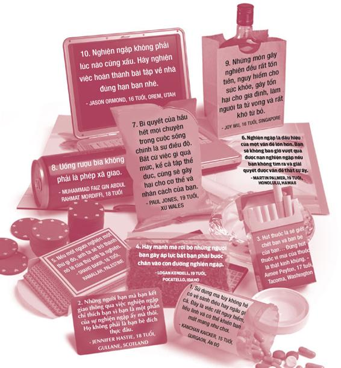
Hút thuốc vừa có hại cho chính bạn mà vừa ảnh hưởng đến những người xung quanh.
- Nữ diễn viên Brooke Shields
Dưới đây là những lời “trăng trối” nổi tiếng của một số người ngay trước khi trút hơi thở cuối cùng.
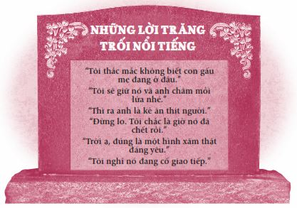
Còn dưới đây là một số lời “trăng trối” nổi tiếng của các bạn trẻ trước khi bước vào con đường nghiện ngập.
• “Không đâu bồ, thứ này hoàn toàn tự nhiên và an toàn. Chính vì vậy mà mọi người mới gọi đây là thảo dược.”
• “Chỉ một lần sẽ không sao đâu mà.”
• “Ai cũng làm vậy hết.”
• “Mình có thể cai bất cứ lúc nào mà.”
• “Cậu chỉ sống có một lần thôi.”
• “Đời tôi mà. Tôi có làm hại đến ai đâu.”
Bạn có thể nghiện rất nhiều thứ, bao gồm thuốc lá, rượu, chất cấm, thuốc bán theo toa, thức ăn, ngủ, chứng rối loạn ăn uống, chi tiêu hoang phí, những nỗi ám ảnh, tivi, trò chơi điện tử, mạng Internet, tình dục, văn hóa phẩm đồi trụy, cờ bạc hay chứng tự làm tổn thương bản thân... Nhiều thói nghiện ngập trong số này không quá nghiêm trọng và không thật sự gây tổn hại đến bạn, chẳng hạn như việc nghiện một trò chơi điện tử hay nghiện một loại kẹo nào đó. Những việc này giống sở thích hơn là nghiện. Trong khi đó, một số thói nghiện khác nghiêm trọng hơn và có thể gây hại cho não, khiến bạn làm những việc xuẩn ngốc hoặc thậm chí giết chết bạn.
Chúng ta đang sống trong một xã hội đầy rẫy thói nghiện ngập. Trong những khảo sát tôi gửi đến các bạn trẻ, việc uống rượu bia, hút thuốc và sử dụng ma túy luôn được nhắc đến khi các bạn nói về những thách thức hàng đầu mình phải đối mặt. Ở nhiều trường học, đây chính là những thách thức hàng đầu.
Vậy tại sao chuyện nghiện ngập lại là chuyện nghiêm trọng như vậy? Hãy ngẫm nghĩ về câu chuyện dưới đây.
Trong Thế chiến thứ II, Viktor Frankl, một bác sĩ tâm lý người Do Thái, đã bị cầm tù trong một trại tập trung của Đức Quốc Xã. Cha mẹ, em trai và vợ của ông đã chết trong trại hoặc bị đưa vào hầm hơi ngạt. Bản thân Frankl cũng liên tục bị hành hạ. Ông phải chịu đựng những nỗi thống khổ không thể diễn tả bằng lời và luôn phập phồng lo sợ không biết khi nào thì đến lượt mình bị đưa vào hầm hơi ngạt.
Một ngày nọ, trong lúc bị nhốt một mình trong phòng, ông chợt nhận ra điều mà ông gọi là “tự do cuối cùng của con người” - thứ tự do bọn Đức Quốc Xã không thể tước đoạt của ông. Bọn chúng có thể giết cả gia đình ông, bọn chúng có thể hành hạ cơ thể ông, nhưng chỉ mình ông mới có thể quyết định xem những điều đó sẽ tác động đến ông như thế nào. Ông được tự do lựa chọn cách phản ứng trước những việc xảy đến với mình.
Để nuôi hy vọng, Frankl tưởng tượng hình ảnh chính ông đang giảng bài cho các sinh viên của mình sau khi ông được phóng thích khỏi các trại tập trung chết chóc. Ông nhìn thấy chính mình chia sẻ những trải nghiệm mà ông đã trải qua trong trại. Theo thời gian, ông đã trở thành nguồn cảm hứng cho các tù nhân khác quanh mình và giúp nhiều người tìm được ý nghĩa trong nỗi thống khổ họ đang chịu đựng. Cuối cùng, Frankl đã sống sót qua cuộc chiến và trở thành một người thầy và một tác giả tuyệt vời - giống như những gì ông đã hình dung.
Ngoài món quà là sự sống, bạn còn có một món quà tuyệt vời khác nữa, đó chính là quyền được lựa chọn. Nếu bạn bị nghiện một thứ gì đó, tức là bạn đã từ bỏ quyền được lựa chọn của bạn - tự do của bạn. Bạn trở thành nô lệ và thứ bạn nghiện trở thành ông chủ. Khi thứ này bảo “Nhảy đi”, bạn sẽ hỏi: “Nhảy cao đến đâu?”. Đây chính là lý do lựa chọn của bạn về chuyện nghiện ngập là một trong những quyết định quan trọng nhất bạn phải đưa ra. Bạn có thể chọn con đường đúng đắn bằng cách tôn trọng cơ thể mình, nói “không” với chất gây nghiện ngay từ lần đầu tiên và tránh những thứ gây nghiện như tránh bệnh dịch; hoặc bạn có thể chọn con đường sai lầm bằng cách ngược đãi cơ thể mình, nghĩ rằng “chỉ một lần sẽ không sao” và sa vào nghiện ngập một thứ gì đó có hại.
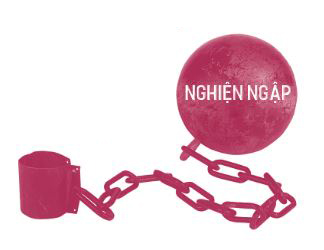
Trong chương này, chúng ta sẽ tập trung vào những thói nghiện ngập nghiêm trọng, những thói nghiện ngập có thể thật sự phá hỏng đời bạn. Tôi phải xin lỗi trước vì giọng văn nặng nề của mình trong chương này. Bởi vì không có gì vui vẻ trong chuyện nghiện ngập cả, ngoại trừ mấy từ tiếng lóng nghe có vẻ sáng tạo dùng để chỉ ma túy và phần giới thiệu hết sức buồn cười của Brooke Shields khi cô được mời làm người phát ngôn cho một chiến dịch chống hút thuốc lá.
Chương này có ba phần. Phần Ba thực tế tàn khốc nói về những ảnh hưởng lâu dài mà các chất gây nghiện tác động đến bạn và những người khác. Phần Sự thật, toàn bộ sự thật và không gì khác ngoài sự thật sẽ cung cấp cho bạn những sự thật phũ phàng và tôi hy vọng rằng phần này có thể trả lời được hầu hết các câu hỏi của bạn về những chất gây nghiện phổ biến nhất. Trong phần Triệt tận gốc , chúng ta sẽ tìm hiểu cách tránh xa và vượt qua cơn nghiện. Phần này cũng nói về thứ mà tôi gọi là ma túy của thế kỷ 21.
ĐÁNH GIÁ TỔNG THỂ TÌNH HÌNH NGHIỆN NGẬP
Trước khi bạn đọc tiếp, hãy làm bài đánh giá sau đây để xem bạn đang ở trên con đường nào nhé.
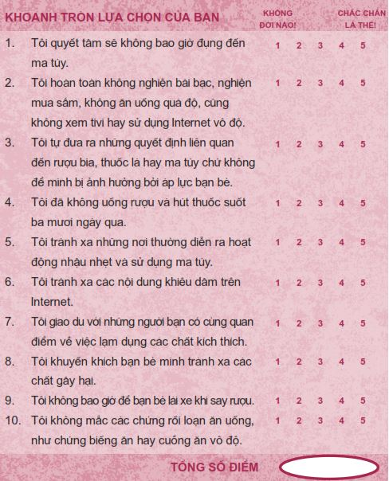
Hãy cộng tất cả điểm số của bạn lại để xem tình trạng của bạn hiện thế nào.
Từ 40 - 50 điểm: Bạn đang đi trên con đường đúng đắn. Hãy cứ tiếp tục phát huy nhé!
Từ 30 - 39 điểm: Bạn đang bước song song trên cả hai con đường. Hãy bước hẳn sang con đường đúng đắn nhé!
Từ 20 - 29 điểm: Bạn đang đi trên con đường sai lầm. Hãy đặc biệt chú tâm vào chương này.
Ba thực tế tàn khốc
Có ba thực tế tàn khốc liên quan đến các chất gây nghiện và các thói nghiện ngập mà tất cả chúng ta phải đối mặt.
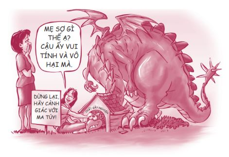
Thực tế tàn khốc 1: Các thói nghiện ngập có thể trở nên mạnh mẽ hơn bạn
Tôi từng cho rằng những người nghiện ngập và lạm dụng thuốc thật yếu đuối và ích kỷ. Thế nhưng, khi càng tìm hiểu sâu hơn, tôi càng thấy hối tiếc vì sự thiếu hiểu biết của mình. Ngay cả những người giỏi giang và xán lạn nhất trong chúng ta vẫn có thể sa vào các thói nghiện ngập. Không ai miễn nhiễm với vấn nạn này cả. Có rất nhiều người tử tế bị nghiện rượu, nghiện bài bạc hoặc nghiện ma túy. Thật ra, họ không khác gì so với bạn và tôi. Họ cũng có hy vọng, có ước mơ. Điểm khác biệt duy nhất giữa họ và chúng ta chính là một vài quyết định sai lầm họ đã đưa ra trong những năm tháng tuổi trẻ.
Tôi có một anh bạn thân tên Phil. Anh ấy là một chàng trai tuyệt vời: thông minh, chân chất, trung thực. Tôi không hề biết anh ấy đã nghiện rượu suốt nhiều năm.
Năm mười ba tuổi, Phil phải vật lộn với chứng tự ti. Một ngày nọ, Phil lén lấy một chai rượu trên xe tải của một người bạn của cha anh. Anh giấu chai rượu vào trong áo khoác để đợi thời điểm thích hợp sẽ uống thử. Một tuần sau, Phil năn nỉ mẹ cho mình tham gia một buổi khiêu vũ ở địa phương và đó là thời cơ để anh thực hiện ý định của mình.
Chai rượu nhỏ nằm vừa vặn trong đôi giày bốt cao bồi của tôi khi tôi đến buổi khiêu vũ. Tôi đi thẳng vào nhà vệ sinh. Tôi uống thử một ngụm. Mặt tôi đỏ lên. Đột nhiên, tôi cảm nhận được một làn sóng thư giãn và lâng lâng. Sự xấu hổ và tự ti trong tôi dường như biến mất. Trong đầu tôi vang lên những tiếng cổ vũ mạnh mẽ thúc giục tôi uống thêm nữa. Tôi nghĩ rượu chính là liều thuốc giúp nâng cao lòng tự trọng của mình.
Kể từ hôm đó, Phil bắt đầu uống ngày một nhiều hơn. Anh thường xuyên trộm cắp và nói dối để có tiền mua rượu. Có nhiều lúc anh ấy hoàn toàn say khướt và có một lần anh ấy cùng mấy người bạn đã lái xe lao xuống vách núi trong lúc say xỉn và suýt bỏ mạng. Thế mà tai nạn đó vẫn chưa đủ để khiến anh ấy tỉnh ngộ.
Phil kể: “Suốt thời đại học, tôi ít khi nào giữ được bình tĩnh trừ những khi được uống rượu. Đến cuối năm thứ ba, tôi đã phải bỏ chai whiskey vào cặp táp và mang vào lớp. Phần lớn thời gian tôi chỉ ngồi ở quán rượu gần trường”.
Vài năm sau, Phil kết hôn và bắt đầu xây dựng cuộc sống gia đình. Trong thời gian này, anh vẫn tiếp tục nghiện rượu. Hôn nhân, gia đình cũng như sự nghiệp của anh bắt đầu bị tổn hại nghiêm trọng. Phil rất yêu cô con gái nhỏ của mình và liên tục hứa với con bé anh sẽ bỏ rượu. Con bé đã viết cho anh mấy lời nhắn nhủ để động viên anh. Đây là một trong số những lời nhắn đó.
Nhưng Phil không thể dừng lại được. “Những lời hứa, những lời cầu nguyện, ý chí hay nghị lực cũng không thể giúp tôi kiểm soát được cơn thèm rượu của mình. Sức mạnh của rượu có vẻ lớn hơn sức mạnh của tôi. Tôi không thể bỏ rượu được dù là vì vợ con, cha mẹ, sự nghiệp hay tín ngưỡng đi nữa!”.
Vài tháng sau, con gái anh đã viết lời nhắn này cho anh:
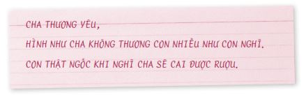
Sau cùng, Phil đã đánh mất mọi thứ: cuộc hôn nhân, cô con gái, công việc, sức khỏe, lòng tự trọng và quyền tự do lựa chọn của anh. Tôi sẽ kể phần còn lại của câu chuyện này ở phần sau.
Dưới đây là một số phát biểu của các bạn trẻ về sức mạnh thao túng của cơn nghiện:
• “Trước đây tôi có thể chạy hơn 1,5 ki-lô-mét trong chưa đầy sáu phút. Sau khi nghiện, tôi thở hổn hển suốt cả chặng đường và may mắn lắm tôi cũng phải mất đến tám phút mới hoàn thành quãng đường này. Tôi muốn cai nghiện, nhưng việc đó không dễ dàng chút nào.”
• “Cảm giác nghiện ngập bắt đầu trở nên quá đỗi quen thuộc đến nỗi ta không nghĩ là mình có thể dứt bỏ được.”
• “Tôi ước gì mình chưa bao giờ tập tành hút thuốc, nhưng hình như kẻ nghiện thuốc nào cũng nói vậy cả.”
• “Bạn bè tôi dùng ma túy và uống rượu như thể đó là chuyện bình thường. Khi tôi hỏi họ có nghiện ma túy và rượu không, tất cả đều phủ nhận và khẳng định họ có thể bỏ bất cứ lúc nào. Nhưng có vẻ họ vẫn sử dụng các chất gây nghiện đó mỗi ngày.”
Ở chương trước, chúng ta đã nói về khoảng trống nơi chúng ta có quyền tự do lựa chọn - thứ nằm giữa những thôi thúc mang tính bản năng và phản ứng của bạn trước thôi thúc ấy. Thế nhưng, khi bạn bị nghiện một thứ gì đó, sức mạnh của cơn nghiện sẽ tước mất quyền tự do lựa chọn của bạn và khoảng trống này sẽ biến mất.
Đừng bao giờ xem thường sức tàn phá của cơn nghiện. Cơn nghiện có thể trở nên mạnh mẽ và thao túng bạn đấy.
Thực tế tàn khốc 2: Thói nghiện ngập không chỉ ảnh hưởng đến mình bạn
Một số bạn trẻ cho rằng những việc họ làm với đời họ không liên quan gì đến người khác. Họ cứ nghĩ “Thân ai người nấy lo, việc ai người nấy làm”. Trong thực tế, việc hút thuốc, uống rượu và sử dụng ma túy không chỉ ảnh hưởng đến mình bạn. Dù bạn có muốn hay không thì các hành vi này cũng ảnh hưởng rất lớn đến những người xung quanh bạn.
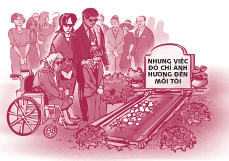
Vậy thói nghiện ngập sẽ ảnh hưởng đến những ai? Hãy lấy trường hợp của Inger làm ví dụ. Khi mới bắt đầu uống rượu và hút cần sa, Inger nghĩ rằng đây là việc riêng của cô ấy và cô ấy tin rằng chuyện mình nghiện những thứ này không gây tổn hại đến ai. Tuy nhiên, một người bạn của Inger đã bắt chước cô và bắt đầu hút cần sa. Không lâu sau đó, mẹ Inger phát hiện ra việc Inger nghiện ngập và rất tức giận. Tình trạng nghiện ngập của Inger chính là nguồn cơn của nhiều xích mích trong gia đình họ. Kip, em trai của Inger, nghĩ rằng nếu Inger có thể hút cần sa thì cậu ấy cũng có thể hút. Bạn trai của Inger không thích cách con người cô thay đổi sau khi cô bắt đầu hút cần sa nên anh quyết định chia tay. Cuối cùng, Inger bị bắt quả tang đang chơi ma túy và phải tiến hành cai nghiện tại một trại tạm giam dành cho thiếu niên trong ba tháng. Mặt khác, trại tạm giam này hoạt động nhờ tiền thuế của người dân. Và câu chuyện cứ thế tiếp diễn theo chiều hướng này. Giờ bạn đã hình dung được vấn đề rồi, đúng không?
Những người bị ảnh hưởng bởi thói nghiện ngập
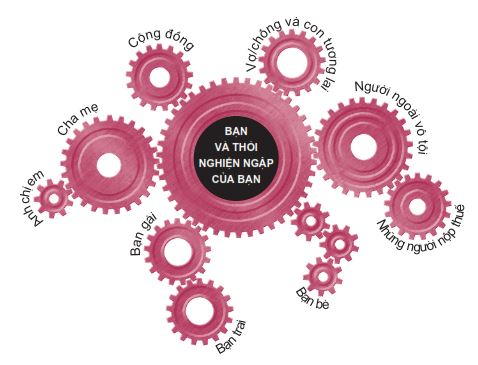
Một người bạn đã kể tôi nghe về những nỗi đau mà gia đình cô ấy phải gánh chịu khi anh trai cô ấy nghiện ma túy.
Năm tôi tám tuổi, anh trai tôi bắt đầu nghiện ma túy. Kể từ thời điểm đó, lúc nào tôi cũng sống trong sợ hãi. Tôi sợ phải ở một mình với anh ấy, sợ anh ấy đánh tôi như anh ấy vẫn hay dọa, sợ anh ấy tự tử, sợ cha mẹ tôi không biết phải giải quyết thói nghiện ngập của anh ấy như thế nào.
Anh ấy nói chúng tôi hãy để anh yên vì đó là đời anh và những quyết định của anh không liên quan gì đến chúng tôi cả. Nhưng anh ấy đã sai. Mặc dù chỉ một mình anh ấy nghiện ma túy, nhưng cả nhà chúng tôi đều bị ảnh hưởng nghiêm trọng. Mỗi lần anh ấy tuyệt vọng vì không đủ tiền mua ma túy, vật vã vì bị thiếu thuốc hay cảm thấy tội lỗi nặng nề vì đã làm tổn thương những người anh yêu thương, tôi và cha mẹ tôi cũng cảm thấy khốn khổ và đau đớn không khác gì anh ấy.
Vài năm sau đó, anh ấy cũng dần biết sợ - sợ mình không thể học hành đến nơi đến chốn, không bắt kịp bạn bè đồng trang lứa, không tìm được việc làm, không thể hàn gắn những mối quan hệ anh đã làm tổn thương và không thể hoàn toàn thoát nghiện. Thậm chí dù cai nghiện thành công, anh vẫn sẽ phải đấu tranh với bản thân mỗi ngày để không tái nghiện.
Cha mẹ tôi cũng sống trong sợ hãi như anh tôi. Dù anh không còn nhỏ nữa, cha mẹ tôi vẫn luôn trăn trở vì anh mỗi ngày.
Tôi chưa bao giờ sử dụng ma túy, nhưng thứ này đã tác động rất tiêu cực đến tôi, đến gia đình tôi và mọi thứ xung quanh tôi.
Thực tế tàn khốc 3: Ma túy hủy hoại ước mơ
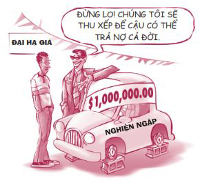
Bạn sẽ phải trả một cái giá rất đắt cho các thói nghiện ngập. Khi nghiện một thứ gì đó, bạn sẽ bị tổn thất cả về thời gian, tiền bạc, lẫn trí tuệ, khả năng tập trung, các mối quan hệ và hạnh phúc của chính mình. Bạn càng lớn, các vấn đề liên quan đến nghiện ngập lại càng trầm trọng hơn.
Tôi có biết một nữ sinh lớp Mười Một tràn đầy nhiệt huyết tên Kori. Cô bé đã tổ chức rất nhiều hoạt động kêu gọi các bạn trẻ tránh xa ma túy. Kori chia sẻ: “Em muốn giúp các bạn trẻ khác tránh đi vào vết xe đổ của em. Những lỗi lầm em mắc phải đã khiến em phải trả giá bằng nhiều năm cuộc đời - những năm tháng em không thể tìm lại được, và em sẽ phải sống phần đời còn lại của mình với những ký ức và những cơn ác mộng kinh hoàng”.
Kori đã có một cuộc sống tuyệt vời bên cha mẹ và các anh chị em của mình cho đến năm cô bé mười một tuổi. “Hằng ngày, khi cha em đi làm về, tất cả thành viên trong gia đình sẽ cùng quây quần bên bàn ăn, đọc kinh tạ ơn và dùng bữa tối. Gia đình em rất hạnh phúc.”
Khoảng một năm sau, Kori bắt đầu thấy bất mãn với mọi việc. Anh trai cô là một vận động viên thể thao chuyên nghiệp và là cậu con trai hoàn hảo của cha mẹ, còn em trai cô là đứa em bé bỏng luôn được mọi người cưng chiều. Vì là con giữa trong nhà, Kori cảm thấy lạc lõng và bị bỏ quên. Cô bé nghĩ mình không thể đáp ứng những kỳ vọng của cha mẹ. “Cha mẹ em muốn có một đứa con gái hoàn hảo và một gia đình hoàn hảo trong khi em không thể giỏi giang như các anh chị em mình. Em hay cáu bẳn với cả thế giới vì cảm thấy cuộc sống thật không công bằng.”
Sau đó ít lâu, Kori bỏ nhà ra đi và dọn đến sống chung với bốn người bạn đồng trang lứa. Những người bạn mới này gồm có Tom và bạn gái của Tom là Emma, cả hai đều mười chín tuổi; Mark, một thiếu niên bị đuổi khỏi nhà và Jay-Jay, một cậu bé cũng bỏ nhà ra đi giống Kori. Mặc dù Kori muốn hoàn toàn lãng quên cuộc sống cũ, thỉnh thoảng cô bé vẫn gọi điện về cho mẹ.
Không bao lâu sau khi dọn ra ở riêng, Kori cùng bốn người bạn của mình bắt đầu uống rượu và dùng cần sa. Sau đó, họ nhanh chóng chuyển sang dùng các loại ma túy mạnh hơn. Kori kể: “Tất cả bọn em đều trở thành con nghiện. Bọn em thử mọi loại ma túy bọn em có thể tìm được. Bọn em dùng gần như toàn bộ số tiền mình có để mua ma túy”.
Rồi một buổi tối nọ, Tom mang về nhà một thứ ma túy mới: heroin. Cả năm người ngồi quanh bàn và chuyền kim tiêm cho nhau, luân phiên tiêm heroin. Người đầu tiên thử là Mark, người tiếp theo là Kori. Sau khi tiêm xong, Kori chuyền kim cho Jay-Jay. Trước đó, Jay-Jay đã uống rất nhiều rượu và hút rất nhiều thuốc.
Kori nói: “Đó là cơn ác mộng em sẽ không bao giờ quên. Jay-Jay kìm chặt cánh tay, đẩy hết khí ra khỏi ống tiêm, rồi bắt đầu tiêm. Sau khoảng mười lăm giây, cơ thể cậu ấy đột nhiên bị co cứng, tái xanh. Mọi người bắt đầu hoảng loạn. Em ngồi như trời trồng, sững sờ nhìn cậu ấy… Rồi em gọi cấp cứu. Nhưng không kịp. Cậu ấy đã chết”.
Cảnh sát đến. Kori và những người bạn của cô đều bị bắt và đưa vào trại cai nghiện. Vài tháng sau, Kori kết thúc chương trình cai nghiện và trở về nhà. Cô quyết định thay đổi con người mình và bắt đầu một cuộc sống mới.
Tôi hỏi: “Còn những người bạn của em thì sao?”.
Kori đáp: “Đó là phần buồn nhất của câu chuyện. Những người nghiện ma túy có thể gặp phải nhiều hệ quả phức tạp, và những hệ quả tệ nhất đã xảy ra với năm người bọn em. Hiện tại, Tom đang bị tổn thương não. Cậu ấy trông vẫn khỏe mạnh nhưng lại không làm được những việc rất bình thường như viết chữ hay buộc dây giày. Emma, bạn gái cũ của Tom, bị nhiễm HIV và không thể ra ngoài, cô ấy quanh quẩn trong nhà cả ngày và mẹ cô ấy phải chăm sóc cô ấy. Còn Mark hiện tại đã mười tám tuổi, cậu ấy vẫn nghiện ma túy và đã có một cô con gái năm tuổi. Jay-Jay thì qua đời ngay đêm hôm đó”.
Tôi nói: “Có vẻ như em là người duy nhất vượt qua được thách thức này”.
“Vâng, có lẽ vậy. Tuy nhiên, bác sĩ của em nói rằng do sử dụng ma túy mà tim và phổi của em hiện tại giống như tim và phổi của người ba mươi bảy tuổi, trong khi em chỉ mới mười bảy tuổi. Ông ấy nói em sẽ khó mà sống đến năm mươi tuổi. Làm thế nào em có thể nói với mẹ rằng em có thể sẽ ra đi trước cả mẹ? Em đã có rất nhiều lựa chọn ngu ngốc. Thế nên giờ em muốn cống hiến hết sức mình để giúp các bạn trẻ tránh xa ma túy.”
Thật là một câu chuyện buồn! Năm bạn trẻ nghiện rượu, ma túy và những kết cục bi thảm. Ai biết được đáng ra họ có thể sống một cuộc đời như thế nào nếu không nghiện ma túy. Rất có thể Tom sẽ trở thành một giáo viên được mọi người yêu mến. Có thể Emma sẽ trở thành một nhạc sĩ tài năng còn Jay-Jay có thể khỏe mạnh lớn lên và trở thành một người cha tuyệt vời. Đó chính là hậu quả của ma túy: Ma túy hủy hoại ước mơ.
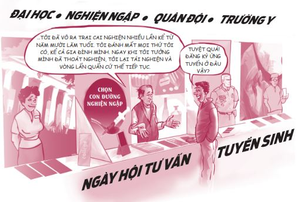
MỔ XẺ CƠN NGHIỆN
Khi đọc đến đây, có thể bạn sẽ nghĩ: “Mấy chuyện như trên đúng là có xảy ra thật, nhưng tôi không làm những chuyện kinh khủng như thế, Sean ạ. Tôi chưa bao giờ bỏ nhà ra đi, cũng chưa bao giờ dùng những loại ma túy loại mạnh. Tôi chỉ muốn vui vẻ một chút chứ không hề nghiện ngập gì cả. Có nhiều bạn trẻ uống rượu và thỉnh thoảng dùng các chất kích thích mà vẫn ổn đó thôi”.
Bạn nói không sai. Có một số bạn trẻ uống rượu, hút thuốc và chơi ma túy mà không bị nghiện. Thế nhưng, đó chỉ là những trường hợp may mắn. Đa số những người uống rượu, hút thuốc và chơi ma túy sẽ bị nghiện. Bạn thấy đó, mỗi người có một phản ứng khác nhau khi dùng các chất gây nghiện. Bạn trẻ này có thể uống một chút rượu và vẫn bình thường trong khi một bạn khác lại có thể bị nghiện chỉ sau một ngụm rượu. Ngoài ra, thậm chí dù bạn không trở thành con nghiện, việc sử dụng ma túy vẫn có thể gây tổn hại nghiêm trọng cho cơ thể và não bộ của bạn, dù bạn chỉ thử dùng ma túy một lần duy nhất. Vậy tại sao ta lại phải mạo hiểm chứ?
Hầu hết những vấn đề liên quan việc lạm dụng chất gây nghiện đều bắt đầu từ các chất gây nghiện “dành cho người mới bắt đầu” như thuốc lá, rượu và cần sa. Tự thân những chất này vốn đã rất nguy hiểm, nhưng chúng còn thường là bước đệm cho những loại ma túy nguy hiểm hơn. Cơn nghiện sẽ bắt đầu hình thành một cách thầm lặng. Anh bạn Phil của tôi gọi quá trình này là “cái nêm nghiện ngập”. Con đường nghiện ngập thường bắt đầu từ những dấu hiệu rất nhỏ - một ly rượu, một điếu thuốc, một mẩu cần sa. Thế rồi bạn muốn nhiều thuốc hơn, nhiều rượu hơn. Bạn muốn những loại ma túy mạnh hơn. Và thế là cái nêm đó cứ tiến vào người bạn ngày càng sâu, tách ra ngày càng rộng cho đến khi hoàn toàn phá hủy bạn.
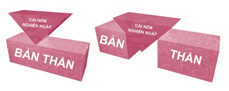
Bạn có thể nhận biết một con nghiện thông qua ba dấu hiệu sau đây:
• Họ sẽ phủ nhận mình là con nghiện và cam đoan: “Tôi có thể bỏ bất cứ lúc nào tôi muốn”.
• Họ sẽ thêu dệt đủ chuyện để che giấu vấn đề của họ.
• Cuộc sống của họ chỉ xoay quanh thứ họ nghiện, họ sẽ tìm mọi cách để thỏa mãn cơn nghiện của mình.
Chúng ta không thể xem nhẹ chuyện nghiện ngập bởi vì thực tế rất tàn khốc.
Sự thật, toàn bộ sự thật và không gì ngoài sự thật
Tôi tin rằng nếu bạn biết toàn bộ sự thật về các chất gây nghiện, bạn sẽ có thể đưa ra những quyết định sáng suốt hơn. Thế nên, sau đây tôi xin chia sẻ với các bạn một số thông tin hữu ích về các chất gây nghiện phổ biến nhất hiện nay. Hầu hết các thông tin này được tham khảo từ trang web http://www.samhsa/gov, một nguồn thông tin rất đáng tin cậy về thanh thiếu niên và các chất gây nghiện.
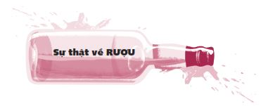
Bạn có biết?
Rượu làm tổn thương não nghiêm trọng. Rượu khiến tầm nhìn bị méo mó, trí nhớ sai lệch; khiến chúng ta mất khả năng phối hợp và phán đoán, phản ứng chậm và thậm chí bất tỉnh. Việc trộn chung rượu với các loại thuốc điều trị bệnh hay chất gây nghiện khác là đặc biệt nguy hiểm, những hỗn hợp này thậm chí có thể gây tử vong.
Rượu gây chết người. Ba nguyên nhân gây tử vong hàng đầu ở các bạn trẻ là tai nạn xe cộ, các vụ giết người và tự sát. Trong đó, rượu chính là yếu tố chủ đạo dẫn đến các vụ việc này. Thực tế, rượu giết chết nhiều thanh thiếu niên hơn tất cả những loại chất cấm khác cộng lại.
Rượu chính là yếu tố góp phần gây ra 75% các vụ cưỡng hiếp trong những dịp hẹn hò. Đừng đụng đến bia rượu trong các buổi hẹn hò. Chuyện này xưa như trái đất, ai cũng biết!
Rượu khiến bạn làm những việc ngu ngốc. Khi còn học trung học, tôi được Đại học Stanford mời đến chơi cho đội bóng của trường. Vào một dịp cuối tuần, tôi được mời đến thăm khuôn viên trường ở Palo Alto, California. Người tiếp đón tôi hôm đó là một cầu thủ cao to trong đội bóng của trường. Nhiệm vụ của anh ta là giúp tôi có những trải nghiệm tốt đẹp để tôi muốn theo học và chơi bóng cho trường. Dù biết tôi không uống rượu, nhưng ngay khi tôi vừa đến nơi anh ta đã đưa tôi đến một bữa tiệc của hội nam sinh, nơi mọi người đều uống say bí tỉ. Tôi đã uống rất nhiều nước ngọt tại bữa tiệc đó. Sau đó, anh ta và bạn bè anh ta đưa tôi đi xem bộ phim The Rocky Horror Picture Show vào suất chiếu lúc nửa đêm.
Trong thời gian xem phim, anh chàng đón tiếp tôi bắt đầu ăn nói không mạch lạc và mất tỉnh táo do uống quá nhiều rượu. Sau đó anh ta bắt đầu nôn mửa trong trạng thái suy giảm ý thức. Tôi cứ tưởng anh ta sắp chết đến nơi. Sau khi gọi cấp cứu, tôi và bạn bè anh ta phải vác thân hình to tướng của anh ta ra xe cấp cứu đang đỗ bên ngoài rạp chiếu phim. Hôm đó, anh ta phải qua đêm ở bệnh viện. Thay vì mang đến cho tôi những trải nghiệm tốt đẹp như đúng nhiệm vụ được giao, anh ta lại tự biến mình thành trò hề và khiến tôi thất vọng hoàn toàn.
Các câu hỏi thường gặp
HỎI: Bia và rượu vang có an toàn hơn rượu không?
ĐÁP: Không. Một chai bia 350ml chứa lượng cồn tương đương với 45ml rượu hoặc 145ml rượu vang. Hãy cẩn thận với rượu táo và các loại nước trái cây có cồn vì các loại nước này được cố tình làm ngọt quá mức để che đi vị cồn và thu hút nhóm khách hàng trẻ tuổi. Việc pha chung các loại nước uống tăng lực với rượu thậm chí còn nguy hiểm hơn, bởi vì chất caffeine có trong nước tăng lực có thể giữ cho bạn tỉnh táo và tiếp tục uống thêm rất lâu, trong khi lượng cồn bạn nạp vào đã quá ngưỡng chịu đựng của cơ thể.
HỎI: Tại sao các bạn trẻ lại không thể uống rượu trong khi cha mẹ họ có thể uống?
ĐÁP: Cơ thể của các bạn trẻ vẫn còn đang trong quá trình phát triển đồng thời cơ thể và trí não của các bạn trẻ bị rượu tác động mạnh mẽ hơn so với người lớn. Những người bắt đầu uống rượu từ trước năm mười lăm tuổi có nguy cơ bị nghiện rượu cao hơn gấp bốn lần so với những người bắt đầu uống ở tuổi hai mươi mốt.
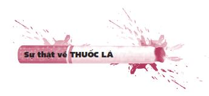
Bạn có biết?
Thuốc lá gây nghiện. Thuốc lá có chứa nicotine, một chất gây nghiện mạnh. Ba phần tư các bạn trẻ hút thuốc mỗi ngày sẽ tiếp tục duy trì thói quen này bởi họ thấy việc cai thuốc quá khó.
Nicotine là chất độc. Nicotine là chất độc cây thuốc lá tiết ra để tránh bị côn trùng ăn. Nicotine độc hơn Arsen 5 gấp ba lần. Chỉ trong vòng tám giây sau khi bạn rít hơi thuốc đầu tiên, chất nicotine sẽ tấn công não bạn và bắt đầu quá trình gây nghiện.
5 Arsen (hay Asen) và nhiều hợp chất của Arsen là những chất cực độc, thường được sử dụng để làm thuốc trừ dịch hại, thuốc diệt cỏ, thuốc trừ sâu.
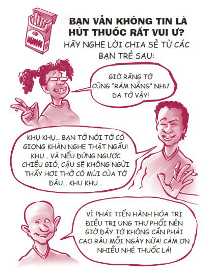
Thuốc lá có thể dẫn đến tử vong. Hút thuốc chính là nguyên nhân phổ biến nhất gây ung thư phổi và cũng là nguyên nhân hàng đầu gây ung thư miệng, cổ họng, bàng quang, tuyến tụy và thận. Thuốc lá không khói có thể gây ung thư miệng, hư răng và các vấn đề sức khỏe khác. Ngoài ra, nhiều nghiên cứu cũng cho thấy thuốc lá điện tử có thể ảnh hưởng nghiêm trọng đến sức khỏe người hút. Đồng thời, chất nicotine có thể gây dị dạng bào thai. Bởi vì cơ thể các bạn trẻ vẫn đang phát triển, việc hút thuốc đặc biệt có hại cho các bạn. Tin sốc là có đến một phần ba các bạn trẻ hút thuốc lá thường xuyên sau đó sẽ chết vì các căn bệnh có liên quan đến thuốc lá. Quá đáng sợ!
Ashley, một cô bé mười bốn tuổi, đã phải chứng kiến ông mình ra đi vì bệnh ung thư phổi.
Ashley kể: “Việc phải chứng kiến ông ra đi vì ung thư thật kinh khủng. Các tế bào ung thư đã xâm chiếm và phá hủy toàn bộ cơ thể ông”.
Ông cô bé bắt đầu hút thuốc khi tham gia lực lượng Hải quân lúc còn là một thanh niên. Ashley có thể hiểu được tại sao một thanh niên sống vào những năm 1940 lại bị dụ dỗ hút thuốc, nhưng cô không thể hiểu nổi tại sao ngày nay các bạn trẻ vẫn tiếp tục bị dụ dỗ như vậy.
Cô bé nói: “Mình thật sự không thể hiểu nổi vì sao các bạn trẻ vẫn tiếp tục hút thuốc dù thông tin về tác hại của thuốc lá và số người chết vì thuốc lá được tuyên truyền rất rộng rãi. Mỗi lần đưa điếu thuốc lên miệng, bạn đều biết rằng thứ đó hoàn toàn có thể giết chết bạn, nhưng bạn vẫn cứ làm. Việc này thật quá phi lý”.
Các câu hỏi thường gặp
HỎI: Thuốc lá không khói có an toàn hơn thuốc lá thông thường không?
ĐÁP: Không, không có dạng thuốc lá nào là an toàn cả. Thuốc lá không khói có thể gây ung thư miệng, má, cổ họng và dạ dày. Người sử dụng thuốc lá không khói có khả năng mắc ung thư đường miệng cao gấp năm mươi lần so với người không hút.
HỎI: Hút thuốc có khiến chúng ta trông hấp dẫn hơn không?
ĐÁP: Hút thuốc chỉ khiến bạn trông hấp dẫn khi bạn cho rằng việc hơi thở có mùi khó chịu, tóc tai hôi hám, móng tay vàng ố và chứng ho sặc sụa là hấp dẫn. Các mẫu quảng cáo thường khoác cho việc hút thuốc tấm áo sành điệu, nhưng bạn hãy nghĩ kỹ xem ai là người tạo ra những mẫu quảng cáo đó và tại sao ngành công nghiệp thuốc lá lại phải chi đến 1,2 triệu đô-la cho một giờ quảng cáo để cố đưa bạn vào con đường nghiện thuốc.
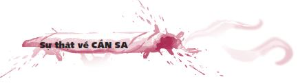
còn được gọi bằng các từ lóng như: bồ đà, tài mà, bin, cỏ, ép, ép xanh…
Dù cần sa đang ngày càng được hợp pháp hóa rộng rãi ở một số nước trên thế giới, việc sử dụng cần sa vẫn gây tổn hại nghiêm trọng cho cơ thể và trí não của bạn. Rượu đã trở thành đồ uống hợp pháp ở Mỹ kể từ khi luật cấm hết hiệu lực vào năm 1933, nhưng thật khó tưởng tượng nổi những tổn hại khủng khiếp rượu đã gây ra trong mấy thập niên qua.
Tôi rất cảm kích lòng dũng cảm của Garrett khi em quyết định chia sẻ câu chuyện của mình.
Mình có một tuổi thơ không êm đềm khi hai anh trai của mình đã phải vào trại cai nghiện vì sử dụng ma túy. Lẽ ra mình phải học hỏi từ sai lầm của họ, thế mà rốt cuộc chính mình cũng bắt đầu lạm dụng ma túy và rượu.
Vào một đêm hè oi ả, cô bạn thân Hannah đến nhà mình chơi và bọn mình đã hút cần sa. Khoảng nửa đêm, bọn mình đến quán rượu với vài người bạn khác. Sau khi uống rượu, tất cả bọn mình đều quá say và mụ mị vì thuốc nên không thể lái xe, thế nhưng mình lại nghĩ mình có thể xoay xở được.
Trên đường lái xe về nhà, mình nghĩ mình đã nhìn thấy một thứ gì đó trên đường và mình cua gắt để tránh thứ đó. Mình đã bẻ lái quá tay và chiếc xe lộn nhào nhiều vòng. Mọi người trên xe đều bị quăng quật mạnh.
Sau tai nạn, mình và các bạn đều bị thương nghiêm trọng. Một cô bạn trên xe đã hôn mê suốt nhiều tuần, người bạn là chủ của chiếc xe phải vào trung tâm cai nghiện, nhưng điều tồi tệ nhất chính là cô bạn thân Hannah của mình đã qua đời vào cái đêm kinh hoàng đó. Mình sẽ không bao giờ gặp lại cô ấy nữa và gia đình cô ấy đã mất đi một người con chỉ vì mình. Thậm chí đến tận hôm nay, mình vẫn nhớ như in những tiếng kêu khóc và rên rỉ tuyệt vọng của bạn bè mình trong chiếc xe móp méo ấy. Mình sẽ phải sống với nỗi ám ảnh ấy trong suốt phần đời còn lại.
Mình bị tuyên tội giết người và bị đưa vào trại phục hồi nhân phẩm thiếu niên. Mình còn phải thụ án thêm nhiều năm nữa nhưng ít ra mình còn có một cơ hội để làm lại từ đầu sau khi được tự do, trong khi Hannah không bao giờ có được cơ hội đó. Mình đã thề sẽ không bao giờ đụng đến rượu và ma túy nữa để tưởng niệm cô ấy.
Bạn có biết?
Cần sa làm cạn kiệt động lực và rất có hại đối với trẻ nhỏ. Cần sa làm cạn kiệt động lực và ý chí phấn đấu của bạn. Ở nam giới, chất này có thể làm giảm số lượng tinh trùng và gây ra chứng bất lực; ở phụ nữ, cần sa làm gia tăng nguy cơ bị sảy thai. Đồng thời, cần sa có thể gây ra những bất thường trong quá trình phát triển ở những đứa trẻ có mẹ hút cần sa trong thời gian mang thai.
Cần sa không phải lúc nào cũng ở dạng nguyên chất. Cần sa có thể được pha trộn với nhiều chất gây nghiện nguy hiểm khác mà bạn không hề biết. Chẳng hạn như các điếu Blunt - các điếu xì gà có phần ruột được thay thế bằng cần sa - đôi khi sẽ được trộn thêm một số chất như cocain, PCP (Phencyclidine - một loại thuốc gây ảo giác), chất lưu hương…
Cần sa tổng hợp thậm chí còn tệ hại hơn. Một số công ty vô đạo đức đã bán các hóa chất tương tự như thành phần hoạt tính trong cần sa, hay còn gọi là cần sa tổng hợp. Họ quảng bá những thứ này là các sản phẩm “thảo dược không dành cho người”. Các nhà quản lý đã đưa ra các biện pháp xử lý nghiêm ngặt nên các nhà sản xuất thường xuyên thay đổi công thức và bao bì để có thể tiếp tục bán cần sa tổng hợp ở các trạm xăng, các cửa hàng dược phẩm tư nhân và trên mạng Internet. Đừng sa đà vào những thứ này. Các sản phẩm này thậm chí còn nguy hiểm hơn cả cần sa tự nhiên.
Các câu hỏi thường gặp
HỎI: Liệu hút cần sa có ít nguy hiểm hơn so với hút thuốc lá không?
ĐÁP: Không. Hút cần sa thậm chí còn tệ hơn. Một điếu cần sa gây hại cho phổi bằng bốn điếu thuốc lá.
HỎI: Có phải cần sa ngày nay mạnh hơn so với cần sa thời cha mẹ mình còn trẻ không?
ĐÁP: Đúng vậy. Cần sa ngày nay thật sự mạnh hơn so với loại cần sa phổ biến vào những năm 1960. Quan trọng nhất, các bạn trẻ ngày xưa hút những điếu cần sa nhỏ - chỉ một ít cần sa cuộn lại, trong khi ngày nay các bạn trẻ hút cần sa trong những điếu xì gà to hoặc các ống tẩu và tiêu thụ một lượng cần sa lớn hơn rất nhiều.
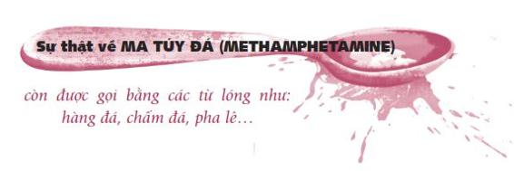
Trong một bài báo đăng trên tờ San Francisco Chronicle , Christopher Heredia đã kể lại câu chuyện về một bạn trẻ tên Sam - một cô bé thích làm thơ và nghe nhạc. Gia đình Sam có một cuộc sống êm đềm ở miền quê và cô bé có vẻ rất hạnh phúc. Thế rồi Sam bắt đầu chơi ma túy đá, và mọi thứ hoàn toàn thay đổi.
Lần đầu tiên Sam thử ma túy đá với các bạn học của em ở trường Trung học Walnut Creek, em thấy rất sợ. Nhưng em lại thích cảm giác hưng phấn mà thứ này mang lại. Sam thử dùng ma túy đá thêm lần nữa, rồi em cứ dùng thêm hết lần này đến lần khác.
Sau khi sử dụng ma túy đá, Sam bị giảm cân và cơ thể em suy nhược nghiêm trọng. Không lâu sau, em bắt đầu cãi cọ với cha mẹ và bạn bè của mình. Rất nhiều lần em đã tự nhốt mình trong phòng suốt nhiều ngày vì sợ cảnh sát sẽ đến gõ cửa. Em tin chắc cảnh sát sẽ đến bắt em. Vì sợ hãi mà em không thể ngủ được. Từ 54 kí-lô-gam, em sụt xuống còn 37 kí-lô-gam.
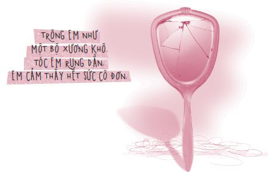
Suốt vài năm tiếp theo, Sam phải chống chọi với cơn nghiện ma túy đá và vẫn thường xuyên cãi nhau với cha mẹ. Cuối cùng, em được chuyển đến một trung tâm cai nghiện gia đình. Trong quá trình cai nghiện, em đã đưa ra rất nhiều lời hứa với bản thân và với gia đình, nhưng lần nào em cũng tái nghiện. Đến nay, em đã cai được gần một năm. Sam nói:
“Mình từng nghĩ chơi ma túy đá rất vui. Nhưng thực tế việc này không vui chút nào… Mình có nhiều mục tiêu, kế hoạch phải hoàn thành và mình cần phải tỉnh táo để thực hiện những mục tiêu và kế hoạch ấy. Mình không thể dùng ma túy đá nữa. Mình có thể chết vì thứ này. Mọi việc vẫn sẽ tồi tệ như cũ nếu mình tái nghiện.”
Bạn có biết?
Ma túy đá gây ra những phản ứng không thể đoán trước được. Bởi vì có quá nhiều công thức tạo ra ma túy đá, bạn không thể lường trước thứ này sẽ ảnh hưởng đến bạn như thế nào vào mỗi lần sử dụng. Rất có thể lần này bạn không gặp phải tác dụng phụ nào, nhưng ở lần sử dụng tiếp theo, ma túy đá có thể giết chết bạn. Không có một công thức chuẩn tạo ra ma túy đá.
Ma túy đá ảnh hưởng đến não. Trong ngắn hạn, ma túy đá làm thay đổi tâm trạng, khiến bạn cảm thấy bồn chồn, lâng lâng, suy sụp. Những ảnh hưởng lâu dài bao gồm chứng mệt mỏi kinh niên, chứng hoang tưởng, ảo giác và tổn thương tâm lý vĩnh viễn.
Ma túy đá ảnh hưởng đến cơ thể bạn. Sử dụng quá liều bất cứ loại ma túy đá nào cũng hết sức nguy hiểm. Ma túy đá thúc đẩy cơ thể hoạt động nhanh và mạnh hơn mức bình thường vì nó tạo ra cảm giác ảo về năng lượng. Chất này cũng làm tăng nhịp tim, tăng huyết áp và tăng nguy cơ bị đột quỵ.
Ma túy đá gây nghiện. Ma túy đá là một chất gây nghiện mạnh, là tác nhân dẫn đến các hành vi hung hãn, bạo lực và chứng loạn thần kinh. Gần một nửa những người sử dụng ma túy đá lần đầu và hơn ba phần tư những người sử dụng lần thứ hai cho biết họ có cảm giác thèm thuốc như đã bị nghiện.
Các câu hỏi thường gặp
HỎI: Ma túy đá có ít nguy hiểm hơn cocain hay heroin không?
ĐÁP: Không. Ma túy đá nguy hiểm hơn. Một số người dùng bị nghiện ma túy đá ngay sau lần hút, hít hoặc tiêm đầu tiên. Bởi vì ma túy đá có thể được làm từ các nguyên liệu gây chết người như acid trong pin, chất thông cống, nhiên liệu đốt lồng đèn và hóa chất chống đông, người dùng chất này có nguy cơ bị đau tim, đột quỵ và tổn thương não nghiêm trọng cao hơn so với người dùng những chất gây nghiện khác.
HỎI: Có thể sử dụng ma túy đá như thuốc giảm cân không?
ĐÁP: Không. Mặc dù ma túy đá gây sụt cân nghiêm trọng nhưng không thể xem đây là hiệu quả giảm cân của ma túy đá, bởi sụt giảm cân do ma túy đá gây ra còn đi kèm với sự suy nhược của cơ thể, đó là chưa kể đến những ảnh hưởng nghiêm trọng khác đối với trí não.
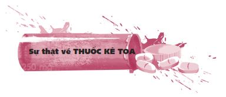
Một bạn trẻ tên Lee kể: “Trước đây, mình uống thuốc Lortab để trị bệnh. Bác sĩ khám cho mình đã kê toa loại thuốc này một cách hợp pháp. Khi đó, mình được chỉ định uống thuốc trong ba mươi ngày. Nhờ uống Lortab mà mình cảm thấy khỏe mạnh hơn và hoàn toàn không còn đau đớn nữa. Sau ba mươi ngày, mình muốn uống tiếp. Vị bác sĩ kia đã đồng ý kê toa thêm mà không kiểm tra lại tình trạng sức khỏe của mình. Sau khi uống thuốc suốt sáu tháng, mình đã bị nghiện. Đến lúc này, vị bác sĩ nọ không đồng ý kê toa thêm cho mình nữa. Chính vì vậy, mình đã tìm mua loại thuốc này ngoài chợ đen. Họ bán thuốc với giá cắt cổ nhưng mình vẫn chọn mua vì mình cần thứ thuốc này. Không bao lâu sau đó, mình bắt đầu cần liều cao hơn, thế là mình chuyển sang dùng OxyContin và Ambien. Mình muốn ngừng lại nhưng không thể. Mình cầu cứu cha mẹ và họ đưa mình đến gặp bác sĩ gia đình.
Sau đó, mình ngưng thuốc được ba tuần rồi lại tái sử dụng. Mình bị tổn thất về tiền bạc và tinh thần nhiều đến nỗi cha mình nhận ra mình đã bị mất kiểm soát. Ông xin nghỉ phép một tuần để đưa mình đến một trung tâm cai nghiện tư nhân và tham gia một chương trình cai nghiện kéo dài năm ngày. Trong khoảng thời gian này, mình không được phép gặp bất kỳ ai. Khi mẹ mình gọi điện hỏi thăm, mình đã khóc và van xin mẹ đến đón mình về nhà dù lúc đó mình đã mười tám tuổi!
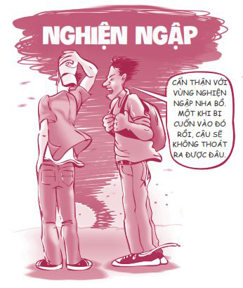
Mình sẽ phải đương đầu với vấn đề này suốt cả đời. Mình sẽ phải sống với nỗi dằn vặt vì đã làm tiêu tan hết cả gia tài chỉ trong một tuần ngắn ngủi và mình biết mọi việc vẫn chưa kết thúc! Một cơn nghiện sẽ dẫn đến nhiều cơn nghiện khác nữa. Hiện tại, mình vẫn phải vật lộn với cảm giác thèm rượu và thèm thuốc OC. Ngày trước, mình chưa bao giờ nghĩ những chuyện thế này lại có thể xảy đến với mình”.
Khi mới bắt đầu, cơn nghiện có vẻ thật vô hại. Nhưng như Lee đã phát hiện, cơn nghiện có thể nuốt chửng lấy bạn nhanh hơn cả cái nháy mắt.
Bạn có biết?
Thuốc giảm đau và heroin có mối liên hệ gần. Các loại thuốc giảm đau được kê toa có chứa một số thành phần tương tự như các thành phần trong heroin - một trong những chất gây nghiện nguy hiểm nhất. Cả thuốc giảm đau được kê toa lẫn heroin đều gây nghiện và không thể kiểm soát được.
Việc lạm dụng các loại thuốc kê toa có thể đe dọa đến tính mạng. Việc lạm dụng các loại thuốc kê toa có thể gây ra rất nhiều vấn đề nghiêm trọng đối với sức khỏe, bao gồm suy hô hấp, các tai biến chết người, chứng rối loạn nhịp tim, các bệnh về tim mạch, tăng thân nhiệt, thái độ thù địch, ảo giác hay phổ biến nhất là chứng táo bón.
Các câu hỏi thường gặp
HỎI: Thuốc kê toa có an toàn hơn các chất gây nghiện bất hợp pháp không?
ĐÁP: Không. Nhiều bạn trẻ nghĩ rằng thuốc kê toa an toàn bởi vì những loại thuốc này được cấp phép sử dụng và được đóng gói trong những chiếc hộp đẹp đẽ, nhưng nếu bạn uống thuốc không có toa của bác sĩ để cảm thấy hưng phấn hoặc để tự trị bệnh, những loại thuốc này có thể gây nghiện và nguy hiểm không khác gì các chất gây nghiện bất hợp pháp cả.
HỎI: Nhưng các bạn trẻ mua những loại thuốc đó từ bác sĩ của họ mà?
ĐÁP: Không phải. Hầu hết các bạn trẻ mua các loại thuốc kê toa từ bạn cùng lớp, người quen và các thành viên trong gia đình hoặc họ lấy trộm thuốc từ những người sử dụng thuốc hợp pháp. Một số người bán đơn thuốc của mình cho các bạn trẻ đang vã thuốc để kiếm tiền nhanh.
Sự thật về các loại THUỐC TRONG HỘP ĐÊM
còn được gọi bằng các từ lóng như: hồng phiến, viên nữ hoàng, ngọc điên, Adam, Eva, love, ice, mè đen, tên lửa, thiên thần...
Các loại thuốc trong hộp đêm là cách gọi chung nhiều loại thuốc đa dạng thường được sử dụng trong các bữa tiệc thâu đêm, các hộp đêm và các buổi đại nhạc hội. Nếu có một viên thuốc khiến bạn…
• Học hành sa sút
• Mất hứng thú với những sở thích, những môn thể thao hoặc những hoạt động mình yêu thích nhất
• Trở nên khó chịu và bất hợp tác
• Gặp các vấn đề về giấc ngủ
• Siết hàm và nghiến răng
• Trở nên lo lắng và hoảng loạn
… thì bạn có hứng thú muốn uống thử không? À, trên đây là những gì bạn sẽ gặp phải khi dùng thuốc lắc, một trong những loại thuốc rất phổ biến trong hộp đêm. Cảm giác bùng nổ ngắn ngủi loại thuốc này mang đến cho bạn thật chẳng đáng với cái giá bạn phải trả chút nào.
Bạn có biết?
Các loại thuốc trong hộp đêm gây ra những rối loạn trong cơ thể và não bộ của bạn. Thuốc lắc là một loại chất kích thích làm tăng nhịp tim, huyết áp và có thể làm hỏng chức năng thận và tim. GHB là một loại thuốc giảm đau có thể gây uể oải, bất tỉnh, khó thở. LSD là một loại ma túy gây ảo giác mạnh có thể khiến bạn nhìn thấy những thứ đáng sợ thật ra không hề tồn tại. Các loại thuốc trong hộp đêm có thể làm tổn hại các tế bào thần kinh trong não, làm suy giảm các giác quan, trí nhớ, khả năng phán đoán và phối hợp của bạn. Việc sử dụng các chất này với liều cao có thể gây ra các vấn đề nghiêm trọng về hô hấp, dẫn đến hôn mê và thậm chí là gây tử vong.
Các loại thuốc trong hộp đêm và các vụ cưỡng hiếp trong những buổi hẹn hò có liên quan với nhau. Các loại thuốc như GHB và Rohypnol là một dạng thuốc an thần. Nói cách khác, những loại thuốc này khiến bạn bất tỉnh và bất động. Rohypnol có thể gây ra một dạng mất trí nhớ - bạn có thể không nhớ những gì mình đã nói hoặc làm sau khi uống thuốc, điều này tạo điều kiện cho kẻ khác dễ dàng lợi dụng bạn hơn. Các loại thuốc trong hộp đêm đáng sợ thế đấy!
Các câu hỏi thường gặp
HỎI: Nếu có người lén bỏ thuốc kích thích vào đồ uống của bạn, bạn có nhận ra ngay không?
ĐÁP: Nhiều khả năng là không. Bạn không thể ngửi được mùi hay nếm được vị của hầu hết các loại thuốc kích thích. Một số loại còn được điều chế ở dạng bột để dễ hòa tan vào thức uống và nhờ đó dễ qua mắt người bị hại hơn.
HỎI: Sử dụng thuốc lắc có gây ra ảnh hưởng lâu dài gì không?
ĐÁP: Có. Rất nhiều nghiên cứu cho thấy việc sử dụng thuốc lắc thường xuyên sẽ gây ra những tổn thương dài lâu, thậm chí là vĩnh viễn, đối với khả năng suy nghĩ và lưu trữ ký ức của não.
HỎI: Nếu bạn uống các loại thuốc trong hộp đêm tại một bữa tiệc thâu đêm, có phải sau khi bạn nhảy nhót tưng bừng, mọi tác dụng của thuốc sẽ tan hết không?
ĐÁP: Không hẳn. Một số ảnh hưởng của thuốc lắc, chẳng hạn như chứng mất ngủ, trầm cảm, ảo giác, lú lẫn v.v., có thể kéo dài đến vài tuần sau khi uống thuốc.
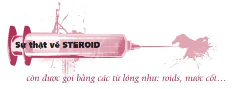
Steroid đồng hóa là các dẫn xuất tổng hợp của testosterone, một nội tiết tố nam. Chất này không tự tạo cơ nhưng lại cho phép bạn luyện tập với cường độ cao hơn, trong thời gian dài hơn và giúp bạn hồi phục nhanh hơn. Có nhiều người cố tình dùng steroid để có vóc dáng vạm vỡ hơn và đạt thành tích thể thao tốt hơn. Nếu chỉ nhìn bề ngoài, bạn trông rất tuyệt với những cơ bắp cuồn cuộn. Nhưng bên trong, bạn đang bị steroid ăn tươi nuốt sống.
Kênh truyền hình FOX News từng thực hiện phóng sự Breaking Point: The Truth About Steroid (tạm dịch: Điểm nguy kịch: Sự thật về Steroid ) để kể câu chuyện về Patrick - người đã bắt đầu sử dụng steroid từ những năm tuổi teen.
Khi còn đang học trung học, Patrick quyết tâm muốn thay đổi hình thể của mình.
“Rất nhiều người, đặc biệt là các bạn trẻ, cảm thấy xấu hổ về cơ thể mình và nếu việc này khiến bạn quá phiền não, bạn sẽ sẵn lòng làm bất cứ điều gì để cải thiện hình thể của mình”, Patrick tâm sự.
Cậu ấy đến phòng tập gym bảy ngày một tuần, nhưng chỉ tập luyện thôi vẫn chưa đủ. Thế nên, giống như hàng triệu bạn trẻ khác, cậu ấy bắt đầu sử dụng steroid đồng hóa bất hợp pháp.
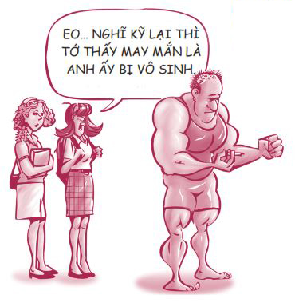
Patrick kể: “Mọi người thường nhìn tôi trầm trồ: ‘Ôi, nhìn anh kìa, trông anh mới cường tráng làm sao’. Và thế là tôi cười mãn nguyện”.
Không bao lâu sau, huyết áp của cậu ấy tăng đụng nóc; lông, tóc bắt đầu rụng dần và tính khí cậu ấy trở nên vô cùng thất thường.
Cậu ấy nói: “Tôi giống như ví dụ minh họa về ‘cơn thịnh nộ steroid’ trong sách giáo khoa vậy: Bạn thức dậy với tâm trạng bực bội và suốt cả ngày hôm ấy, bạn càng lúc càng thấy bực bội hơn”.
Patrick đã ngưng sử dụng steroid từ ba năm trước, nhưng những tổn thất nghiêm trọng về sức khỏe mà cậu ấy phải chịu thì đã xảy ra rồi và vẫn còn ảnh hưởng dai dẳng.
Bạn có biết?
Steroid thay đổi ngoại hình của bạn, nhưng sẽ không chắc là theo chiều hướng tốt đẹp . Làm thế nào bạn nhận ra người nào đó đang sử dụng steroid? Câu trả lời rất đơn giản: Ngoài việc có cơ bắp to hơn, những người sử dụng steroid bị nổi nhiều mụn, bị vàng da, hơi thở có mùi và dễ nóng giận. Ở nam giới, biểu hiện dễ thấy nhất chính là chứng hói đầu, ngực phát triển bất thường (Ối!) và chứng bất lực. Ở nữ giới, các biểu hiện thường gặp là lông mặt phát triển, giọng nói trầm hơn và ngực nhỏ lại.
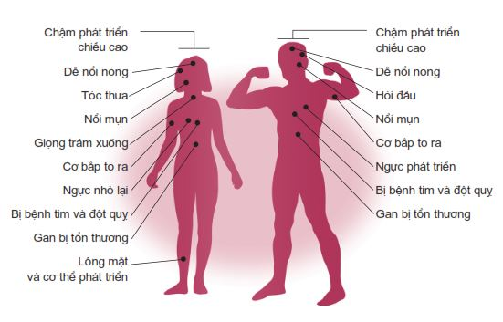
Nếu bạn không hài lòng về ngoại hình của mình, chắc hẳn bạn sẽ không muốn cơ thể mình thay đổi theo chiều hướng này đâu.
Steroid có thể kìm hãm chiều cao của bạn . Nếu bạn sử dụng steroid khi còn trẻ, chất này có thể kìm hãm sự phát triển chiều cao của bạn. Có thể bạn có tiềm năng cao trên một mét tám mươi, nhưng vì dùng steroid mà bạn chỉ cao đến một mét năm mươi lăm thôi, dù có cơ bắp cuồn cuộn.
Các câu hỏi thường gặp
HỎI: Steroid có gây nghiện không?
ĐÁP: Có, chất này có thể gây nghiện. Các triệu chứng khi ngưng thuốc bao gồm: tâm trạng thất thường, nghĩ đến việc tự tử và cố tự tử, mệt mỏi, bất an, ăn không ngon và mất ngủ.
HỎI: Steroid lưu lại bao lâu trong cơ thể chúng ta?
ĐÁP: Khoảng thời gian steroid lưu lại trong cơ thể chúng ta dao động từ vài tuần đến hơn mười tám tháng.
HỎI: Làm sao tôi có thể đạt thành tích thể thao cao mà không dùng steroid?
ĐÁP: Mỗi người có một cơ chế tạo cơ khác nhau, nhưng nếu bạn nạp đủ protein, ngủ ngon và tập luyện chăm chỉ, bạn có thể phát triển các cơ bắp phù hợp với tạng người tự nhiên của mình. Các vận động viên giỏi nhất mọi thời đại và hàng triệu vận động viên khác đã có một sự nghiệp thành công mà không cần dùng đến steroid. Ngoài ra, hiện nay steroid đã bị cấm ở hầu hết các giải đấu thể thao ở các trường học và các giải đấu thể thao chuyên nghiệp.
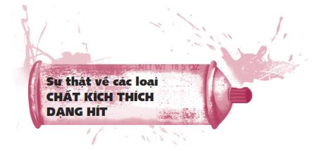
Chất kích thích dạng hít gồm một nhóm lớn các hóa chất có trong các sản phẩm gia dụng như bình xịt côn trùng, dung dịch tẩy rửa, keo, sơn, chất pha sơn, xăng, khí propane, nước rửa móng tay, bút xóa, bút dạ quang. Tất cả các chất này đều có thể giết chết bạn. Các hóa chất như amyl nitrite và isobutyl nitrite và nitrous oxide thường được bán tại các hộp đêm.
Bạn có biết?
Các chất kích thích dạng hít gây tổn thương não. Chất kích thích dạng hít là những dung môi dễ bay hơi từ các sản phẩm gia dụng nêu trên; người ta hít những chất này để có cảm giác hưng phấn cao độ ngay tức thì. Bởi vì các chất kích thích dạng hít ảnh hưởng đến não của bạn với tốc độ và cường độ lớn hơn rất nhiều so với những chất kích thích khác, chúng có thể gây ra những tổn thương không thể phục hồi cả về thể chất lẫn tinh thần trước khi bạn kịp nhận biết chuyện gì đã xảy ra.
Chất kích thích dạng hít ảnh hưởng đến tim và cơ thể bạn. Chất kích thích dạng hít khiến cơ thể chúng ta bị thiếu ô-xy, buộc tim phải đập nhanh hơn, điều này có thể dẫn đến rối loạn nhịp tim. Những người sử dụng các loại chất kích thích dạng hít có thể bị buồn nôn và chảy máu mũi; họ cũng gặp các vấn đề về gan, phổi, thận và mất thính giác hay khứu giác. Sử dụng các chất này trong thời gian dài có thể dẫn đến tình trạng yếu cơ và mất cơ.
Các câu hỏi thường gặp
HỎI: Vì có trong các sản phẩm gia dụng nên các chất kích thích dạng hít rất an toàn, đúng không?
ĐÁP: Không. Mặc dù các sản phẩm gia dụng như keo hoặc hóa chất xịt phòng là những sản phẩm hữu ích và được sử dụng hợp pháp, những sản phẩm này lại rất độc hại và nguy hiểm nếu được sử dụng để hít, vì chúng không được tạo ra với mục đích này.
HỎI: Có phải chúng ta phải hít những chất này rất nhiều lần thì mới gặp nguy hiểm không?
ĐÁP: Không. Chỉ một lần hít cũng có thể giết chết bạn. Nếu không phải ngay lần đầu tiên thì là lần hít thứ mười, không phải lần hít thứ mười thì là lần hít thứ một trăm. Mỗi lần sử dụng các chất kích thích dạng hít đều ẩn chứa rủi ro. Thậm chí, dù trước đây bạn đã từng hít và không gặp vấn đề gì, bạn cũng không thể lường trước phản ứng của cơ thể bạn vào lần sử dụng tiếp theo.
HỎI: Các chất kích thích dạng hít có thể khiến mình mất kiểm soát không?
ĐÁP: Có. Các chất kích thích dạng hít ảnh hưởng đến não và có thể khiến bạn đột ngột có những hành vi bạo lực hay thậm chí giết chóc. Bạn có thể làm tổn thương bản thân và những người bạn thương yêu.
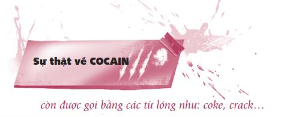
Bạn có biết?
Cocain ảnh hưởng đến não. Từ cocain được dùng để chỉ cả thuốc ở dạng bột (cocain) và ở dạng tinh thể (crack). Hợp chất này được điều chế từ cây coca, giúp mang đến cho người sử dụng cảm giác hưng phấn ngắn hạn, theo sau đó là những cảm giác hoàn toàn trái ngược - trầm cảm, cáu kỉnh và thèm muốn nhiều thuốc hơn. Cocain có thể được hít ở dạng bột, được tiêm bằng kim ở dạng lỏng hay được hút ở dạng tinh thể.
Cocain là chất gây nghiện. Cocain cản trở quá trình tổng hợp các hợp chất tạo ra khoái cảm của não bộ nên bạn sẽ cần ngày càng nhiều thuốc hơn chỉ để cảm thấy bình thường. Những người nghiện cocain sẽ bắt đầu mất hứng thú với các lĩnh vực khác trong cuộc sống như trường lớp, bạn bè và thể thao.
Cocain có thể gây chết người. Cocain có thể gây đau tim, tai biến, đột quỵ và suy hô hấp. Những người dùng chung kim tiêm với người khác khi sử dụng cocain còn đối mặt với nguy cơ bị lây nhiễm HIV/AIDS, bệnh viêm gan hoặc các căn bệnh lây qua đường máu khác. Thậm chí những người sử dụng cocain lần đầu tiên cũng có nguy cơ bị tai biến và đau tim dẫn đến tử vong.
Việc kết hợp cocain với rượu hoặc các loại ma túy khác là cực kỳ nguy hiểm. Tác dụng của chất kích thích này có thể khuếch đại tác động của các chất kích thích khác và hỗn hợp các chất đó có thể gây tử vong.
Các câu hỏi thường gặp
HỎI: Bởi vì cocain dạng tinh thể không lưu lại trong cơ thể bạn quá lâu, chất này có ít gây nghiện hơn so với cocain dạng bột không?
ĐÁP: Không. Cocain dạng bột và dạng tinh thể có khả năng gây nghiện mạnh như nhau. Thời gian các chất này lưu lại trong cơ thể không ảnh hưởng gì đến khả năng gây nghiện của chúng cả.
HỎI: Có phải một số người sử dụng cocain để cảm thấy dễ chịu hơn?
ĐÁP : Bất cứ cảm giác dễ chịu nào cũng chỉ kéo dài trong một thời gian ngắn, còn theo sau đó thường là những cảm giác tồi tệ, chẳng hạn như cảm giác hoài nghi và thèm thuốc cực kỳ khó chịu. Cocain có thể khiến người sử dụng có ảo giác tạm thời rằng mình vô cùng khỏe mạnh và tràn trề năng lượng, nhưng sau đó, họ thường bị suy sụp cả về thể chất lẫn tinh thần.
CHỐT LẠI VẤN ĐỀ
Vẫn còn rất nhiều loại ma túy chưa được đề cập đến trong phần này, chẳng hạn như heroin, PCP, v.v., nhưng có lẽ bạn đã bắt đầu thấy chán ngấy khi phải đọc về vấn đề này rồi. Sau một lúc, bạn sẽ bắt đầu cảm thấy tất cả các chất gây nghiện đều có vẻ giống nhau. Chốt lại vấn đề, nếu bạn có biết ai đang sử dụng ma túy, hãy thúc giục họ tìm sự giúp đỡ. Nếu chính bản thân bạn đang dùng các chất kích thích, hãy ngưng sử dụng! Hãy nói chuyện với một người trưởng thành mà bạn tin tưởng. Ma túy có hại cho bạn, hủy hoại cuộc đời bạn và khiến bạn tốn rất nhiều tiền. Ví dụ, những người nghiện cocain phải chi hàng trăm đô-la hay thậm chí là hàng ngàn đô-la mỗi tuần để thỏa mãn cơn nghiện. Hãy nghĩ đến tất cả những bộ quần áo đẹp và các trò giải trí bạn có thể mua được với số tiền đó.
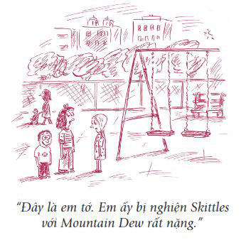
Triệt tận gốc
Không ai bước vào con đường nghiện ngập với ý nghĩ: “Ôi, mình nóng lòng trở thành một con nghiện quá”. Trên thực tế, phần lớn những người sa vào con đường nghiện ngập là vì ẩn sâu bên trong họ là những nhu cầu chưa được đáp ứng.
Triết gia Henry David Thoreau từng nói: “Để diệt trừ cái xấu, hàng ngàn cú đánh ở ngọn không bằng một cú đánh mạnh ở gốc”. Nói cách khác, chúng ta thường quá tập trung vào các triệu chứng bên ngoài của việc lạm dụng chất gây nghiện mà không nhìn vào gốc rễ của vấn đề. Để giải quyết vấn đề nghiện ngập, bạn phải giải quyết từ gốc. Nguyên nhân gốc rễ của thói nghiện ngập thường là một trong sáu nguyên nhân sau:
Nguyên nhân gốc rễ của thói nghiện ngập
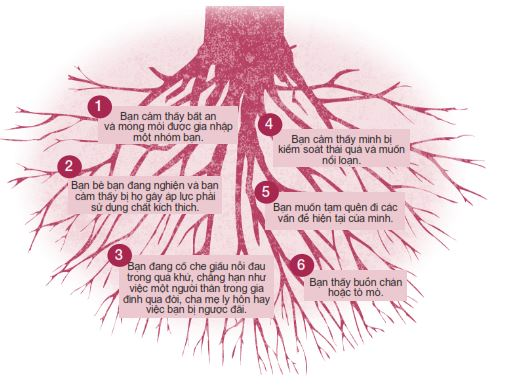
Chúng ta hãy xem xét trường hợp của Amanda. Gia đình Amanda chuyển chỗ ở năm cô bé mười ba tuổi và mới vào lớp Bảy. Điều này đã trở thành một bước ngoặt không mong muốn trong cuộc sống của Amanda.
“Lúc mới chuyển trường, mình có chơi chung với một nhóm bạn ở trường. Những người bạn này hút thuốc lá và chơi thuốc LSD (một loại thuốc gây ảo giác). Hút thuốc chính là cách bọn mình gắn kết với nhau. Lúc đó, mình thấy rất hoang mang và chỉ muốn có bạn. Mình đã không nghĩ về hậu quả của những lựa chọn mình đưa ra.”
Nếu bạn đang suy sụp, giận dữ, tổn thương, muốn nổi loạn, sợ hãi, bất an hoặc đang có một khoảng trống nào đó trong lòng cần được lấp đầy, thay vì lấp đầy khoảng trống ấy bằng cách uống rượu và chơi ma túy, hãy thử một thứ gì khác mang lại sự an ủi một cách tích cực và lâu dài hơn. Thay vì nghiện các chất và các hoạt động có hại, bạn hoàn toàn có thể nghiện những thứ có lợi và cảm thấy hưng phấn một cách tự nhiên! Dưới đây là danh sách những món gây nghiện có lợi có thể giúp bạn lấp đầy những khoảng trống ẩn sâu trong cuộc sống của mình.
Các món gây nghiện có lợi:
• Tập thể dục. Việc tập luyện giúp giải phóng endorphin - chất giảm đau tự nhiên của cơ thể và giúp tạo tâm trạng tích cực. Bạn có từng nghe về trạng thái hung phấn khi chạy bộ chưa? Đó là cảm giác lâng lâng bạn cảm thấy trong khi chạy. Quả thật, không gì có thể khiến đầu óc bạn tỉnh táo bằng việc tập thể dục đúng cách.
• Chơi thể thao. Sự cạnh tranh khi chơi thể thao rất lành mạnh, hấp dẫn và gây nghiện. Chơi thể thao tạo cơ hội để bạn gặp gỡ thêm nhiều bạn mới và khiến bạn bận rộn đến nỗi không còn thời gian để nghĩ đến việc chơi ma túy.
• Âm nhạc. Một người bạn của tôi đã phát hiện ra bản thân có năng khiếu âm nhạc vào năm anh ấy mười ba tuổi. Dù chưa từng học qua một lớp học âm nhạc nào, anh ấy đã trở thành người chơi guitar giỏi nhất trường. Âm nhạc chính là đam mê lớn nhất của anh. Mỗi khi buồn, anh chơi guitar thay vì dìm chết bản thân trong ma túy.
• Chăm sóc người khác. Nhiệt tình giúp đỡ, quan tâm người khác luôn là cách tốt nhất giúp bạn quên đi những rắc rối của bản thân.
• Các sở thích . Hãy tìm một việc bạn thích làm và cố gắng làm tốt việc đó. Dù đó là nhiếp ảnh, nấu nướng hay thiên văn học, việc theo đuổi các sở thích đều giúp cơ thể sản sinh cảm giác hưng phấn tự nhiên mà không khiến bạn bị hụt hẫng sau đó.
• Học tập. Hãy xem học tập là niềm vui. Hãy đọc thật nhiều sách. Hãy đăng ký các lớp học nâng cao hoặc các lớp dự bị đại học được tổ chức tại trường bạn. Hãy toàn tâm toàn ý học tập.
• Gia đình. Không ai quan tâm đến bạn nhiều như gia đình bạn, không chỉ cha mẹ mà còn cả anh em họ, cô, dì, chú, bác và ông bà. Khi bạn bị tổn thương, hãy san sẻ gánh nặng với gia đình thay vì tìm kiếm một lối thoát tiêu cực.
• Đức tin. Tôn giáo hoặc niềm tin vào những lý tưởng cao đẹp có thể giúp cuộc sống của bạn có mục đích và ý nghĩa hơn đồng thời cho bạn những chuẩn mực sống phù hợp, xứng đáng để noi theo.
• Bạn bè. Những lúc gặp khó khăn, hãy tìm đến những người bạn tốt của bạn. Hãy tâm sự với họ để tìm ra hướng giải quyết vấn đề thay vì đắm chìm trong các chất kích thích.
• Viết nhật ký. Viết nhật ký là một cách giúp bạn khuây khỏa. Quyển nhật ký có thể trở thành người bạn tốt nhất của bạn, là nơi bạn có thể giãi bày mọi cảm xúc, suy nghĩ của bản thân mà không sợ bị phán xét.
Trong những năm tháng tuổi teen của mình, có nhiều lúc bạn sẽ phải chịu áp lực từ phía bạn bè giục bạn phải uống rượu, hút thuốc hay chơi ma túy. Có lẽ bạn đã từng nếm trải cảm giác này. Có lẽ bạn đã đầu hàng một hay hai lần và luôn ước mình đã mạnh mẽ hơn.
Vậy làm thế nào bạn trở nên mạnh mẽ để kháng cự lại áp lực này? Bạn hãy ngẫm nghĩ về 3 điều cần Biết và 5 cách nói Không sau đây.
3 ĐIỀU CẦN BIẾT
Biết sự thật. Bạn có thể đưa ra rất nhiều quyết định đúng đắn nếu bạn biết rõ các sự thật. Thuốc lá tàn phá cơ thể bạn và khiến bạn bị nghiện. Rượu khiến bạn làm những điều ngu ngốc. Ma túy giết chết các tế bào não. Các chất gây nghiện làm tổn thương bạn và những người quanh bạn. Bạn có cần phải biết thêm điều gì nữa mới có thể đưa ra những quyết định đúng đắn liên quan đến các chất gây nghiện không?
Biết chính mình. Để có đủ sức mạnh nói “không” với các chất gây nghiện, bạn cần phải tìm được một việc quan trọng hơn để nói “có”. Ví dụ, nếu bạn muốn được tuyển vào đại học và học tốt, bạn cần có trí tuệ minh mẫn. Nếu bạn là một vận động viên thể thao, bạn cần có khả năng tập trung cao độ. Ở hầu hết các trường, bạn sẽ bị loại khỏi đội thể thao nếu bị bắt quả tang uống rượu hay chơi ma túy. Nếu bạn muốn lập gia đình, bạn phải có đủ tiền và sức khỏe để chăm lo cho gia đình bạn. Nếu muốn có một tương lai tốt đẹp, bạn không thể nghiện bất cứ thứ gì vì không sớm thì muộn, thói nghiện ngập sẽ trồi cái đầu xấu xí của nó lên và làm tổn thương bạn và những người bạn yêu thương nhất.
Khi bạn đứng trước một quyết định khó khăn, hãy hỏi bản thân: Quyết định này có đúng với con người mình và mẫu người mà mình muốn trở thành hay không?
Chính nhờ biết rõ những gì mình muốn ngay từ khi còn học trung học, Chelsea đã có thể dễ dàng kháng cự lại áp lực bạn bè và kiên trì thực hiện kế hoạch của mình.
Mình thấy thật buồn khi có quá nhiều bạn lạm dụng rượu và ma túy trong trường mình. Khi một số người bạn mình chơi chung hỏi: “Cậu có muốn thử hút thuốc không?”, mình luôn trả lời: “Không đâu”. Mình không muốn chất độc gớm ghiếc ấy xâm nhập và tàn phá cơ thể mình. Mình cố gắng tránh xa tiệc tùng vì mình đã nghe về những câu chuyện không hay diễn ra tại các bữa tiệc. Mình làm việc của mình. Mình chỉ đi chơi với những người bạn mình có thể tin tưởng và không cố gây áp lực buộc mình phải làm việc này việc kia.
Một trong những mục tiêu mình hướng đến là để lại một dấu ấn tốt đẹp ở trường, bởi vì đó là điều khiến mọi người nhớ đến mình. Anh trai của mình đã để lại một ấn tượng tốt đẹp như thế ở trường này. Sau khi tốt nghiệp, anh ấy đã được đăng ảnh tuyên dương trên một tấm bảng lớn nhờ giành được nhiều giải thưởng thể thao và tham gia nhiều công tác cộng đồng. Mình cũng muốn được nhớ đến vì đã nỗ lực cống hiến cho trường giống như anh.
Biết tình thế. Đừng đùa với lửa hoặc tự đặt bản thân vào những tình huống mà bạn có thể sẽ không đủ mạnh mẽ để kháng cự áp lực. Một người vừa cai rượu xong sẽ không xin làm chân pha chế ở quán rượu. Tương tự như vậy, nếu bạn có khuynh hướng dễ đầu hàng trước đám đông, đừng đi đến những bữa tiệc nơi mọi người đều say bí tỉ hay đều dùng các chất kích thích. Hãy lên kế hoạch trước, nếu không người khác sẽ lên kế hoạch thay bạn.
5 CÁCH NÓI KHÔNG
Năm mười tám tuổi, Alby bị bắt vì tội buôn ma túy và bị khép vào mức án tù cao nhất. Mọi chuyện bắt đầu vào một ngày hè tại một góc đường ở Yonkers, New York, khi Alby mới mười ba tuổi.
Một cậu bạn của Alby nói: “Nghĩ kỹ lại đi. Hút một điếu xem nào”.
Alby đã không đủ mạnh mẽ để từ chối. Cậu bé nghĩ mình phải hút điếu cần sa đó thì mới có thể hòa nhập được với các bạn. Cậu bé quá mong mỏi được có bạn. Cha mẹ Alby không hề quan tâm đến cậu. Bản thân hai người cũng nghiện ma túy và là những người cha, người mẹ không ra gì. Thế là cậu bé đã hút điếu cần sa và cứ tiếp tục hút hết lần này đến lần khác. Cuối cùng, cậu bị nghiện và trở thành một kẻ buôn ma túy. Giá mà cậu bé đã mạnh mẽ hơn.
Trên thực tế, các bạn trẻ không thể nói “không” thường là do họ không biết phải từ chối như thế nào. Trước giờ họ chưa từng nói lời từ chối và khi bị đặt vào tình huống phải đưa ra quyết định, họ đã chịu thua trước áp lực bạn bè. Nếu bạn có chuẩn bị trước, cơ hội bạn kháng cự thành công sẽ tăng đáng kể. Dưới đây là năm cách để từ chối. Hãy chọn một cách phù hợp với bạn và thực hành cách này thật to trước gương vài lần.
Từ chối thẳng. Nếu đủ tự tin, bạn chỉ cần nói thẳng lời từ chối với họ. Đừng xin lỗi. Cuộc trò chuyện sẽ diễn ra theo kiểu:
“Nghĩ kỹ lại đi. Hút một điếu xem nào.”
“Không, cảm ơn.”
“Ôi, thôi nào anh bạn. Không đau đớn gì đâu.”
“Có thể không đau thật, nhưng đơn giản là tớ không muốn. Tớ có lý do của tớ. Như vậy được chưa?”
Dùng óc hài hước. Đôi khi khiếu hài hước có thể giúp bạn đạt mục đích một cách dễ dàng.
“Ê, thử một chút đi. Món này hay lắm.”
“Cảm ơn nha nhưng tớ thích mấy tế bào não của tớ được nguyên vẹn hơn thử mấy thứ này.”
Lấy cha mẹ làm cớ. Nếu bạn bị rơi vào một tình huống khó xử, hãy lấy lý do cha mẹ bạn quá nghiêm khắc để từ chối lời đề nghị. Đây là một trong những phương pháp rất hiệu quả.
“Tới lượt cậu này. Thử đi.”
“Không, cha mẹ tớ sẽ giết tớ mất.”
“Có ai nói cho họ biết đâu?”
“Cậu không biết cha mẹ tớ đâu. Họ sẽ phát hiện ra ngay thôi.”
Đưa ra những lựa chọn thay thế. Một số bạn trẻ uống rượu và chơi ma túy chỉ vì họ buồn chán và không nghĩ ra được việc gì tốt hơn để làm. Vì vậy, hãy chuẩn bị sẵn một số lựa chọn thay thế để gợi ý cho mọi người những khi cần.
“Đây, uống một viên này đi.”
“Bọn mình không có việc gì hay hơn để làm à?”
“Chẳng hạn như việc gì?”
“Chúng ta hãy đi xem bộ phim mới vừa ra rạp đi. Tớ nghe nói phim đó hay lắm. Để tớ lái xe cho.”
Đứng lên và chuồn thẳng. Nếu bạn rơi vào một tình huống rắc rối và bạn cảm thấy không ổn, hãy tin vào bản năng của mình và chuồn đi thật nhanh. Đừng lo lắng người khác sẽ nghĩ gì về bạn.
“Ê, cậu đi đâu đấy?”
“Tớ phải đi rồi. Tớ sẽ giải thích sau. Hẹn gặp lại cậu nhé.”
Rất nhiều con nghiện đã nói: “Giá mà tôi đã từ chối ngay từ lần đầu tiên thì cuộc đời tôi giờ đã khác rồi”. Hãy mạnh mẽ vào cái lần đầu tiên ấy. Đừng nói với bản thân: “Một lần sẽ không hại gì đâu”. Con nghiện nào cũng nói vậy. Đối với những việc mà bạn không muốn dính vào cả đời thì đừng bao giờ thử, dù chỉ một lần.
ĐỂ TIẾNG TĂM CỦA BẠN TỰ LÊN TIẾNG
Nếu bạn không uống rượu hay chơi ma túy, dần dần tiếng tăm của bạn sẽ tự lên tiếng và bạn sẽ không còn bị mời vào những hội bạn hay đến những bữa tiệc có rượu bia và ma túy nữa. Hãy xem đây là một lời khen ngợi. Và đừng lo lắng, bạn không hề bỏ lỡ bất cứ điều tốt đẹp nào đâu. Có thể bạn sẽ bị chọc ghẹo, nhưng bạn sẽ có thể xử lý được việc đó, giống như cách Josh Kennedy, một học sinh lớp Mười Hai, đồng thời là một nhạc sĩ xuất chúng, đã làm.
Một hôm, một người bạn của mình đã hỏi liệu mình có muốn đến bữa tiệc sắp tổ chức ở nhà một người bạn không. Mình trả lời: “Ừ, tớ muốn đi thử”. Nhưng ngay sau đó, cậu bạn ấy lại nói: “Không, tớ nghĩ là cậu không muốn đi đến đó đâu”. Thế là mình đã không được mời. Bạn bè mình đều biết mình không uống rượu nên họ không mời mình đến những bữa tiệc có rượu. Mình vui khi biết rằng có thể mình đang làm gương cho người bạn ấy.
Đức tin chính là một trong những lý do quan trọng khiến mình quyết định không uống rượu. Thỉnh thoảng, mọi người vẫn châm chọc mình về quyết định này. Một bạn gái còn gọi mình là kẻ chết nhát vì mình không tham dự tiệc tùng. Cô ấy nghĩ mình đang bỏ lỡ nhiều điều thú vị. Nhưng khi mình thấy tình trạng của những người bạn đó tại các bữa tiệc: hơi men nồng nặc, tình dục bừa bãi, say bí tỉ đến mức thậm chí không biết đường về nhà, mình thấy bản thân không hề bỏ lỡ bất cứ điều gì cả. Mình cũng hoàn toàn không quan tâm đến những gì họ nói.
ĐÁNH BẠI CƠN NGHIỆN
Có thể bạn đang chuẩn bị sa vào con đường nghiện ngập. Cũng có thể bạn đã nghiện. Dù bạn đang ở trong tình huống nào đi nữa, hãy nhớ rằng việc cai nghiện ngay bây giờ, khi bạn còn đang ở tuổi teen, luôn dễ dàng hơn là để đến sau này mới cai nghiện.
Một số bạn trẻ có thể nhanh chóng cai nghiện chỉ nhờ lòng quyết tâm. Một số bạn khác có thể cai sau khi trải qua một liệu trình điều trị ở các trung tâm cai nghiện. Nhiều bạn phải trải qua các chương trình điều trị đặc biệt hoặc các liệu pháp chuyên sâu kéo dài đến vài năm thì mới cai nghiện được. Và cũng có một số bạn không bao giờ chiến thắng được cơn nghiện của mình.
Anh bạn Phil của tôi, người tôi từng nhắc đến ở phần trước, đã phải vật lộn với chứng nghiện rượu suốt nhiều năm. Anh ấy đã đến một trung tâm cai nghiện, đặt ra nhiều lời hứa với bản thân và gia đình, cai được vài tháng, rồi một đêm nọ anh lại uống để quên đời. Anh ấy đã sống trong một cái vòng lẩn quẩn: hết giành chiến thắng rồi lại thất bại. Cuối cùng, sau khi đã mất hết tất cả và rơi xuống tận đáy tuyệt vọng, anh ấy mới tìm lại được sức mạnh để quyết tâm cai nghiện thêm lần nữa. Sau cùng, nhờ sử dụng quy trình mười hai bước của tổ chức Alcoholics Anonymous, anh đã có thể kiểm soát được cơn nghiện của mình và cai nghiện được rất nhiều năm rồi.
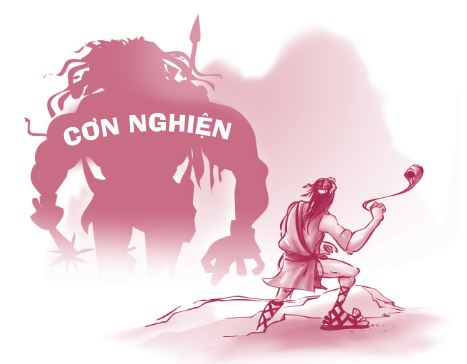
Hiện nay, Phil đã tái hôn và có một cuộc sống gia đình rất hạnh phúc, bình yên. Anh đã quyết định cống hiến hết sức mình để giúp đỡ những người nghiện rượu chiến thắng cơn nghiện của họ. Tuy nhiên, anh vẫn luôn xem bản thân là một người nghiện rượu; anh biết rõ chỉ cần lơ là một chút thôi, anh sẽ lại đi vào vết xe đổ của mình.
Tôi không phải chuyên gia về lĩnh vực cai nghiện, nhưng tôi có thể liệt kê một số nguyên tắc chính khi cai nghiện như sau:
1. Thừa nhận vấn đề của mình. Hãy thừa nhận bạn đang gặp vấn đề hay sắp gặp các vấn đề liên quan đến nghiện ngập.
2. Tìm kiếm sự giúp đỡ . Hãy tìm kiếm sự giúp đỡ từ cha mẹ, bạn bè tốt, một nhóm hỗ trợ hoặc một chuyên gia tư vấn. Lạm dụng chất gây nghiện là một vấn đề khá phổ biến nên có rất nhiều phương pháp điều trị, nhiều chương trình và nhóm hỗ trợ có thể giúp ích cho bạn. Trong lúc cai nghiện, bạn sẽ cảm thấy vững tâm hơn khi có người ở bên cạnh hỗ trợ so với khi phải chiến đấu một mình. Amanda đã chia sẻ chuyện cô rơi vào nghiện ngập vì muốn nổi loạn chống lại cha mẹ mình. Về sau, cô đã tìm đến chính cha mẹ mình để xin giúp đỡ. “Năm mười bảy tuổi, mình đã đến tìm cha mẹ và tự thú rằng mình đang nghiện ma túy. Mình cũng nói rằng cách duy nhất giúp mình thoát khỏi cơn nghiện chính là rời khỏi nơi ở một thời gian để tránh xa đám bạn bè xấu của mình”. Cha mẹ Amanda hết lòng ủng hộ cô và đã sắp xếp mọi việc để cô có thể đi xa một thời gian nhằm tránh khỏi môi trường xấu. Sau khi đã cai nghiện thành công, Amanda đã trở về nhà và hiện tại cô đang học đại học.
3. Hành động ngay. Nếu bạn nghĩ có thể bạn đang gặp vấn đề, nhiều khả năng đúng là như vậy thật. Đừng trì hoãn. Bạn càng trì hoãn, vấn đề càng trở nên khó giải quyết hơn.
Bước ngoặt
Quan trọng nhất, bất cứ lúc nào bạn cảm thấy bối rối và không biết nên làm gì, hãy nghe theo lương tâm, trực giác hay bản năng bên trong bạn.
Ngay từ khi còn rất trẻ, Curtis đã quyết tâm không uống rượu hay chơi ma túy. Vì quyết định này mà mỗi khi cùng bạn bè tham dự các bữa tiệc, cậu luôn được phân công làm tài xế trên đường về nhà.
Curtis nhớ lại: “Các bữa tiệc thường rất đông đúc. Thế nhưng, dù xung quanh có rất nhiều người, mình vẫn thấy vô cùng cô đơn. Những lúc như thế, mình thường nghĩ hẳn phải có điều gì đó tốt đẹp hơn thế này dành cho mình trên đời. Các bữa tiệc ngày càng trở nên hoành tráng hơn, mọi người bắt đầu dùng rượu mạnh hơn và đổi thuốc lá để lấy cần sa và các loại ma túy khác”.
Không bao lâu sau, Curtis đã đầu hàng trước cám dỗ và áp lực bạn bè và cũng bắt đầu uống rượu.
Sau một trận cãi vã lớn với cha, Curtis đã bỏ nhà ra đi và dọn về sống chung với bạn bè cậu. Một đêm nọ, cậu bỗng thức tỉnh.
“Tối hôm đó, mình và một người bạn trở về căn hộ để tìm mấy người bạn khác. Ở đó, một số người đang uống rượu và họ đã đưa mình một chai bia. Mình nốc một ngụm bia và thấy buồn nôn. Mình ngồi xuống và nhìn những người bạn kia. Ngay khoảnh khắc ấy, từ trong thâm tâm, mình bắt đầu suy nghĩ rất nhiều. Mình nhận ra mình muốn sống một cuộc đời có ý nghĩa hơn thế này. Mình biết những người trong căn phòng đó không thể mang đến cho mình cuộc sống như vậy. Họ còn chưa thể tự lo cho bản thân, làm sao họ có thể thấu hiểu, ủng hộ và yêu thương mình?
Nếu mình muốn ước mơ và tin tưởng cuộc đời một lần nữa, mình phải bỏ rượu. Mình phải tránh xa những con người này. Thậm chí dù có phải lủi thủi một mình suốt đời, mình cũng sẽ chọn dừng lại. Mình muốn trở thành một người có ích.”
Ngày hôm sau, Curtis trở về nhà. Cậu sợ cha sẽ nổi giận. Nhưng không, cha cậu đã khóc vì vui mừng khi thấy cậu trở về. Hiện tại, Curtis và cha cậu đã trở thành bạn tốt của nhau và Curtis cũng đã bắt đầu một con đường mới.
Phá vỡ vòng lẩn quẩn
Nhiều bạn trẻ có cha mẹ và ông bà uống rượu, hút thuốc hay chơi ma túy cũng làm theo tấm gương xấu này. Đây là một vòng lặp không hồi kết. Nếu rơi vào trường hợp này, bạn có thể trở thành người phá vỡ vòng lẩn quẩn ấy và bắt đầu truyền lại những thói quen tốt cho con cái bạn trong tương lai. Đây sẽ là một đóng góp tuyệt vời, không chỉ cho gia đình tương lai của bạn, mà còn cho cả những người đi trước - những người đã không thể chiến thắng được thói xấu của bản thân.
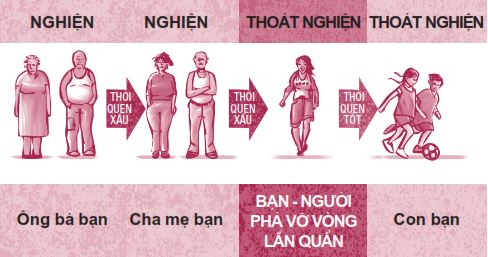
“MA TÚY” CỦA THẾ KỶ 21
Còn một thói nghiện ngập khác chúng ta vẫn chưa đề cập đến: nghiện văn hóa phẩm khiêu dâm. Tôi gọi văn hóa phẩm khiêu dâm là một thứ ma túy bởi vì thứ này có khả năng gây nghiện giống như cocain vậy. Nếu không tin, bạn cứ thử hỏi một người bị nghiện văn hóa phẩm khiêu dâm hay một nhà trị liệu chuyên điều trị chứng nghiện này xem. Tôi dùng cụm “của thế kỷ 21” bởi vì, mặc dù văn hóa phẩm khiêu dâm trước nay vẫn luôn tồn tại dưới nhiều hình thức, dường như thứ “ma túy” này phát triển đủ lông đủ cánh nhất với sự bùng nổ của mạng Internet trong thế kỷ này. Cách đây chỉ khoảng một thế hệ, người ta không dễ dàng tiếp cận được văn hóa phẩm khiêu dâm. Thế nhưng ngày nay, văn hóa phẩm khiêu dâm tự tìm đến bạn.
Ngành công nghiệp khiêu dâm là một ngành công nghiệp trị giá hàng trăm tỷ đô-la và vẫn đang tiếp tục tăng trưởng. Những người đang vận hành guồng máy này không quan tâm đến bạn. Họ chỉ muốn tiền của bạn. Họ biết rõ những nội dung này có tính gây nghiện và họ đã tìm được rất nhiều cách để dụ dỗ bạn sa vào con đường nghiện văn hóa phẩm khiêu dâm.
Nếu bạn tiếp xúc quá gần với văn hóa phẩm khiêu dâm, thứ này sẽ trồi lên, cắm những chiếc răng sắc nhọn của nó vào người bạn và kéo bạn xuống dưới làn nước âm u nhanh đến nỗi bạn không kịp nhận biết điều gì vừa xảy ra. Con quái vật này đặc biệt nhắm tới phái nam, mặc dù nữ giới cũng sa vào thứ “ma túy” này ngày càng nhiều hơn.
Hãy cùng tìm hiểu kỹ hơn về thứ “ma túy” này nhé.
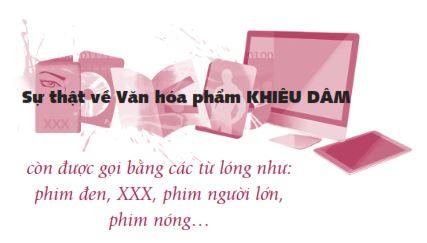
Bạn có biết?
Văn hóa phẩm khiêu dâm có cơ chế hoạt động giống với ma túy. Tiến sĩ Judith Reisman viết rằng việc xem văn hóa phẩm khiêu dâm sẽ tạo ra các phản ứng hóa học trong não, giống như những gì xảy ra khi sử dụng ma túy: “Xem các nội dung khiêu dâm sẽ kích hoạt adrenaline và sản sinh ra testosterone, oxytocin, dopamine và serotonin. Đây là một hỗn hợp toàn các chất gây nghiện”.
Văn hóa phẩm khiêu dâm rất dễ gây nghiện. Một bạn trẻ tên Wes chia sẻ: “Văn hóa phẩm khiêu dâm rất dễ gây nghiện. Mình xếp thứ này ngang hàng với nicotin. Mình bị nghiện ngay khi nhìn thấy thứ này!
Mình mê mệt văn hóa phẩm khiêu dâm đến nỗi đã để nó chi phối toàn bộ cuộc sống của mình! Đó là tất cả những gì mình nghĩ đến. Mình mặc kệ gia đình để dành thời gian xem văn hóa phẩm khiêu dâm. Mình không quan tâm đến việc điểm số của mình ngày càng sa sút. Ở nhà, mình giấu những thứ này vào tủ đồ, rồi mình làm bài tập về nhà một chút, sau đó mình lại tiếp tục xem văn hóa phẩm khiêu dâm cho đến tận giờ ăn tối.
Sau bữa tối, mình xem phim có cảnh khiêu dâm trên truyền hình cáp đến tận ba giờ sáng. Mình ngủ thiếp đi và tỉnh dậy lúc sáu giờ, tiếp tục xem thêm một lúc rồi đi học. Và cái vòng tuần hoàn ấy cứ lặp đi lặp lại mỗi ngày. Mình bị mắc kẹt vào đó và càng ngày càng lún sâu hơn. Mình không biết làm thế nào để thoát khỏi vũng lầy này.
Một lần nọ, mình bị cha mẹ bắt quả tang đang xem phim ảnh khiêu dâm, nhưng rồi chỉ một tuần sau đó, mình lại chứng nào tật nấy. Mình nói dối mẹ rằng mình không dùng máy tính nữa. Văn hóa phẩm khiêu dâm đã hoàn toàn kiểm soát cuộc sống của mình. Lời khuyên của mình là hãy tránh thứ này càng xa càng tốt”.
Càng xem nhiều văn hóa phẩm khiêu dâm, bạn lại càng muốn nhiều hơn, cho đến khi, như Wes đã nhận ra, thứ này gần như tước đoạt toàn bộ thời gian tỉnh táo của bạn, tham vọng của bạn, mọi thứ của bạn, cứ như bạn đang nghiện ma túy đá vậy.
Các câu hỏi thường gặp
HỎI: Xem văn hóa phẩm khiêu dâm có phải chuyện bình thường không?
ĐÁP: Không. Không có thứ gây nghiện nào là bình thường cả. Một trong những tác hại lớn nhất của văn hóa phẩm khiêu dâm chính là cách thứ này tác động lên các mối quan hệ. Văn hóa phẩm khiêu dâm có thể khiến bạn bắt đầu xem người khác như công cụ để đạt được khoái cảm. Thứ này có thể hủy hoại mối quan hệ của bạn với bạn trai hay bạn gái, bởi vì không ai có thể trở nên hoàn hảo như những hình ảnh trên màn hình máy vi tính, tivi hay trên các tạp chí. Rồi bạn sẽ bắt đầu thích các mối quan hệ ảo hơn các mối quan hệ ngoài đời thật. Suy nghĩ này sẽ khiến bạn dần thay đổi và trở thành một con người xa lạ. Văn hóa phẩm khiêu dâm giống như một thứ ma túy, thứ này sẽ khiến bạn làm những việc bình thường bạn sẽ không làm.
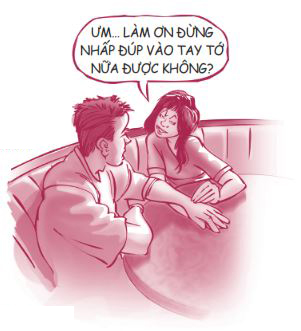
Ngoài ra, văn hóa phẩm khiêu dâm còn khiến bạn chai lì cảm giác. Khi bị văn hóa phẩm khiêu dâm kích thích quá mức, bạn sẽ không còn hứng thú, rung động trước những điều thú vị nho nhỏ như việc nắm tay, hôn nhẹ, đường cong ở cổ của một cô gái hoặc xương quai hàm của một chàng trai.
HỎI: Tác hại của việc xem các nội dung khiêu dâm là gì?
ĐÁP: Nhiều nghiên cứu đáng tin cậy và nhiều chuyên gia trong lĩnh vực hành pháp và tư vấn pháp luật đều nói rằng văn hóa phẩm khiêu dâm chính là nhân tố nổi bật góp phần dẫn đến các vụ ngược đãi trẻ em, hiếp dâm, bạo hành phụ nữ, lạm dụng ma túy, các cuộc hôn nhân tan vỡ và những cuộc đời không trọn vẹn. Tiến sĩ Cline đưa ra bốn cấp độ nghiện văn hóa phẩm khiêu dâm: bắt đầu nghiện, nghiện nặng , bị tê liệt cảm giác , và cấp độ cuối cùng: thực hiện ý đồ.
Gene McConnell, nhà sáng lập kiêm người điều hành tổ chức Authentic Relationships, đã trải qua cả bốn cấp độ nghiện văn hóa phẩm khiêu dâm. Ông đã rất can đảm khi quyết định chia sẻ câu chuyện của mình.
Năm Gene lên sáu tuổi, ông bị một người trông trẻ quấy rồi tình dục và ông đã giữ bí mật về việc đó suốt nhiều năm. Đến năm mười hai tuổi, ông bắt đầu tiếp xúc với văn hóa phẩm khiêu dâm. Ông mô tả trải nghiệm ấy giống như việc tiêm ma túy trực tiếp vào tĩnh mạch. Ông ngay lập tức bị nghiện thứ này. Suốt nhiều năm sau đó, ông ngày càng sa đà vào các dạng văn hóa phẩm khiêu dâm theo chiều hướng càng lúc càng lệch lạc hơn.
Gene viết: “Một ngày nọ, tôi đọc được một bài báo nói về nạn hiếp dâm, hành hạ và bắt cóc. Tôi bắt đầu mường tượng cảm giác khi tôi thật sự cưỡng hiếp ai đó. Và thay vì tìm kiếm sự giúp đỡ, tôi lại giữ im lặng cho đến khi tìm thấy cơ hội thực hành những gì tôi đã đọc và mường tượng.
Hôm đó, tôi đang đi lấy xe trong một bãi đỗ xe vắng người. Bất chợt, tôi nhìn thấy một phụ nữ trẻ. Tôi đã đi theo cô ấy đến chỗ xe cô ấy. Tôi muốn cưỡng hiếp cô ấy nên đã cố chui vào xe và dùng hai tay siết lấy cổ cô ấy. Nhưng ngay lúc đó, khi nhìn thấy nỗi sợ hãi sâu sắc trong đôi mắt cô gái trẻ, tôi bỗng nhận ra mình đang sắp hủy hoại cuộc đời một con người. Suy nghĩ đó khiến tôi bừng tỉnh. Tôi buông tay ra và nói: ‘Tôi hết sức xin lỗi, xin cô tha thứ cho tôi’. Rồi tôi để cô ấy đi”.
Cô gái đã để ý và ghi nhớ biển số xe của Gene khi ông choáng váng đi về xe của mình. Sau đó, Gene bị tuyên án tù 45 ngày về tội cố ý hành hung người khác. Ông cảm thấy nhẹ nhõm vì nhờ vậy mà vấn đề của ông đã được đưa ra ánh sáng. Giờ đây, Gene đã trở thành một con người khác. Ông đang dũng cảm đứng lên để nói về bản chất nguy hại của việc nghiện văn hóa phẩm khiêu dâm đối với thanh thiếu niên và người trưởng thành.
Ted Bundy, một kẻ giết người hàng loạt đã bị hành quyết vì các tội trạng của mình, từng nói: “Tôi đã gặp rất nhiều người bị kích động thực hiện các hành vi bạo lực giống như tôi. Và không có trường hợp nào ngoại lệ, tất cả đều có dính dáng đến văn hóa phẩm khiêu dâm”.
Hai con sói
Một trong những quyển sách hay nhất tôi từng bị ép phải đọc ở trường chính là Lord of the Flies (tựa tiếng Việt: Chúa Ruồi ) của William Golding. Có lẽ bạn cũng đã từng đọc qua quyển sách này. Quyển sách kể về một nhóm các bé trai chưa đến tuổi thiếu niên bị kẹt lại trên một hòn đảo hoang sau một vụ tai nạn máy bay mà không có sự hiện diện của một người lớn nào cả. Chỉ vài ngày sau, các bé trai bắt đầu chia phe và đánh nhau. Một số cậu bé vẫn giữ được cách cư xử văn minh, trong khi đa số những bé trai còn lại dần trở nên hoang dã và hung ác. Câu chuyện phản ánh sự thật rằng tất cả chúng ta đều có hai mặt: sáng và tối, tốt và xấu, văn minh và dã man; và chính chúng ta là người quyết định mình sẽ sống với mặt nào.
Câu chuyện này cũng nhắc tôi nhớ đến câu chuyện ngụ ngôn về hai con sói.
“Cháu trai của ta, ta cảm thấy như có hai con sói đang đánh nhau trong tim mình. Một con sói đầy thù hận, giận dữ và bạo lực; còn con kia thì giàu tình yêu thương và lòng trắc ẩn.”
“Ông ơi, vậy con sói nào sẽ thắng trong trận chiến ấy ạ?”
“Cháu yêu của ông, chỉ con sói nào ông sẵn lòng cho ăn mới có thể giành chiến thắng.”
Đó chính là cách tâm chúng ta vận hành. Nếu bạn nuôi dưỡng phần thấp hèn bên trong mình bằng cách tiếp thu mọi loại văn hóa phẩm độc hại, không lành mạnh, phần dã man trong bạn sẽ lớn mạnh hơn phần văn minh. Như triết gia Thomas Kuhn phát biểu: “Bạn không thể làm vui lòng con thú bên trong bạn mà không hoàn toàn trở thành một con thú”.
Trái lại, nếu bạn bỏ đói con sói xấu xa, con vật này sẽ chết. Vậy bạn bỏ đói nó bằng cách nào? Bạn hãy cho con sói tốt ăn. Hãy lấp đầy trái tim và tâm trí mình bằng thật nhiều phim ảnh, âm nhạc, những hình ảnh và thú vui ý nghĩa, lành mạnh - những thứ có thể giúp bạn giải trí, khơi nguồn sáng tạo và nâng tầm bản thân bạn. Hãy đi chơi với những người bạn giúp khơi gợi những điều tốt đẹp nhất ở bạn.
Nghiện văn hóa phẩm khiêu dâm là một chứng nghiện hành vi mạnh như nghiện cocain vậy. Hãy tránh xa thứ này. Hãy khôn ngoan và tự giác. Hãy ném những sản phẩm này đi thật xa hoặc tắt máy tính đi. Hãy đặt máy vi tính của bạn ở phòng khách, nơi mọi người đều có thể nhìn thấy bạn đang làm gì, thay vì đặt máy vi tính trong phòng ngủ. Nếu bạn thường xem phim, ảnh khiêu dâm cùng một số người bạn nhất định, đừng ở một mình với họ. Hãy nói với họ bạn đã bắt đầu bị nghiện và không thể xem những thứ này thêm nữa.
Nếu bạn đã bị nghiện văn hóa phẩm khiêu dâm, hãy tìm kiếm sự giúp đỡ, giống như khi người ta nghiện ma túy vậy. Các nghiên cứu cho thấy bạn rất khó có thể tự vượt qua chứng nghiện này một mình. Đừng tin lời ai đó nói với bạn rằng việc nghiện văn hóa phẩm khiêu dâm là bình thường hay vô hại, hay “đứa con trai nào cũng làm vậy”. Tất cả chúng ta đều biết sự thật không phải vậy.
Người ta thường xem văn hóa phẩm khiêu dâm một cách lén lút. Nhưng rồi cuối cùng, những bí mật xấu xí này cũng sẽ bị lôi ra ánh sáng dưới dạng các mối quan hệ đổ vỡ, lòng tự trọng thấp và những ước mơ không trọn vẹn.
SỐNG KHÔNG NGHIỆN NGẬP
Chúng ta còn chưa bàn đến rất nhiều thói nghiện ngập khác, chẳng hạn như thói nghiện màn hình. Màn hình mà chúng ta đang nói đến ở đây bao gồm màn hình tivi, màn hình máy vi tính, màn hình điện thoại, màn hình trong rạp chiếu phim, màn hình máy tính bảng, v.v. Ngoài ra, chúng ta còn có thể gặp phải thói nghiện cờ bạc, rối loạn ăn uống hay thậm chí hành vi tự cắt tay chân và các hành vi tự tổn thương thân thể khác. Mỗi dạng nghiện được nêu trên đây đều rất nguy hiểm và có thể tàn phá cuộc đời bạn. Chúng ta có thể kể mãi các thói nghiện ngập mà không sao hết được. Nhưng chúng ta không cần phải làm vậy, bởi thật ra, về cơ bản các thói nghiện ngập đều giống nhau. Khi tìm kiếm tài liệu để viết chương này, tôi đã rất sốc khi nhận ra tất cả các câu chuyện đều giống nhau một cách đáng kinh ngạc. Các câu chuyện liên quan đến nạn nghiện ngập luôn phát triển theo cùng một khuôn mẫu. Sáu bước sau đây gần như luôn xuất hiện trong các câu chuyện này:
NẤC THANG DẪN XUỐNG HỐ SÂU NGHIỆN NGẬP
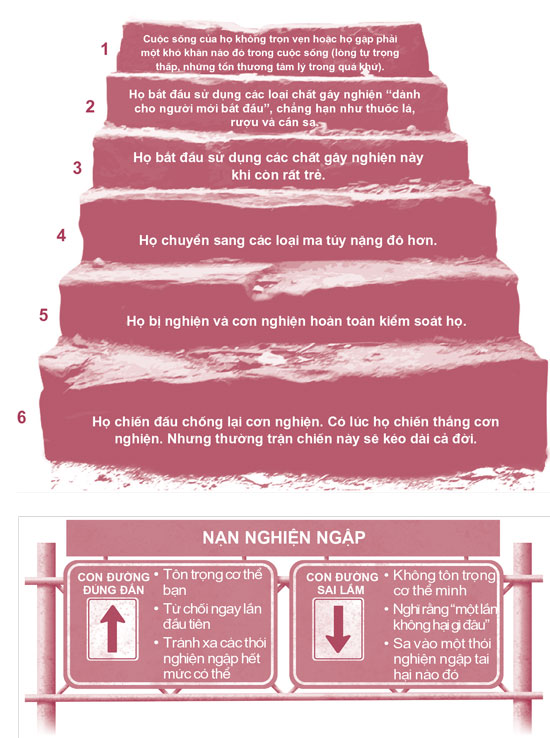
Tôi tin rằng nếu chúng ta có thể loại bỏ tất cả các thói nghiện ngập trên đời này, thế giới sẽ thịnh vượng hơn gấp đôi chỉ sau một đêm. Ý tôi là, bạn hãy thử nghĩ về lượng thời gian, tiền bạc và năng lượng chúng ta phải bỏ ra để đối phó với vấn nạn nghiện ngập mà xem, quả là một con số khổng lồ đúng không?
Nếu bạn đang đi đúng đường và không bị nghiện bất cứ thứ gì, hãy hãnh diện và vui mừng vì bạn không phải gánh vác những gánh nặng đi kèm theo một thói nghiện ngập. Nếu bạn đang phân vân giữa các lựa chọn và vẫn chưa biết chắc mình muốn đi con đường nào, tôi hy vọng bạn sẽ cân nhắc những gì tôi đã chia sẻ trong chương này và quyết tâm tránh xa nghiện ngập. Còn nếu bạn đã nghiện một thứ gì đó rồi, xin hãy thay đổi hướng đi trước khi quá muộn. Đây là chính sứ mệnh đời bạn.
Khi bạn bước sang tuổi hai mươi, nếu bạn không bị nghiện bất cứ thứ gì, bạn đang có một lợi thế cực kỳ lớn. Bạn sẽ hoàn toàn kiểm soát được cơ thể và cuộc sống của mình và nhờ đó, bạn có được sự chuẩn bị tốt nhất để gặt hái được nhiều thành tựu to lớn trong tương lai.
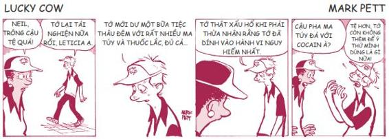
XIN CHÚC MỪNG
BẠN ĐÃ TRÁNH XA KHỎI NẠN NGHIỆN NGẬP
ĐIỀU THÚ VỊ TIẾP THEO
Bạn có từng chơi búp bê Barbie không? Hãy đọc tiếp để khám phá xem búp bê Barbie sẽ trông như thế nào nếu là người thật nhé. Đừng dừng lại khi đã đọc đến đây rồi. Bạn chỉ cần phải đọc thêm một quyết định nữa thôi.
NHỮNG BƯỚC NHỎ
1.
Hãy viết vào hình các bánh xe bên dưới tên của những người sẽ bị ảnh hưởng nếu bạn bước vào con đường nghiện ngập. Nếu bạn đã nghiện rồi, hãy viết tên những người bạn đang làm ảnh hưởng.
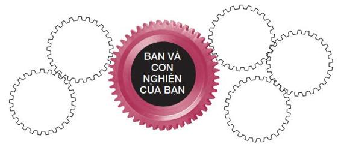
2. Hãy vẽ, làm một bức tranh cắt dán hoặc viết vài dòng mô tả về gia đình mơ ước của bạn trong tương lai. Đừng để bất cứ thói nghiện ngập nào phá hủy giấc mơ của bạn nhé.
3. Bạn có biết người nào đang nghiện ma túy không? Thói nghiện ngập ấy đã ảnh hưởng đến cuộc sống của người đó như thế nào?
4. Hãy chủ động tìm hiểu thông tin về cách tránh xa các loại chất gây nghiện hay cách vượt qua cơn nghiện. Có rất nhiều thông tin hữu ích đang đợi bạn ngoài kia.
5. Hãy đứng trước gương và tập nói từ chối khi phải đối mặt với áp lực bạn bè, hãy sử dụng 5 cách nói Không .
• Từ chối thẳng
• Dùng óc hài hước
• Lấy cha mẹ làm cớ
• Đưa ra những lựa chọn thay thế
• Đứng lên và chuồn thẳng
6. Hãy liệt kê những thứ có thể khiến bạn thấy hưng phấn một cách tự nhiên.
________________________________________________
________________________________________________
________________________________________________
________________________________________________
7. Hãy dán lời nhắc này lên tủ để đồ, gương soi, sổ lập kế hoạch hoặc nhật ký của bạn:
“Việc này có phù hợp với mẫu người mình muốn trở thành hay không?”
Hãy hỏi bản thân câu hỏi này mỗi khi bạn đứng trước một quyết định khó khăn.
8. Hãy lập danh sách những người và những việc truyền cảm hứng cho bạn.
Hãy dành nhiều thời gian ở cạnh những người này và làm những việc này. Hãy nuôi dưỡng con sói tốt trong bạn.
Những người truyền cảm hứng cho tôi: _________________________
Những thứ truyền cảm hứng cho tôi (sách, phim ảnh, tạp chí, âm nhạc, tranh ảnh): __________________________
9. Nếu bạn đang nghiện một thứ gì đó không lành mạnh, hãy tìm sự giúp đỡ ngay. Hãy nói chuyện với một người trưởng thành mà bạn tin tưởng, đến gặp một chuyên viên tư vấn hay chủ động tìm hiểu thông tin về vấn đề bạn đang gặp phải. Đừng chờ thêm một ngày nào nữa.
10. Hãy liệt kê ba lý do chúng ta nên tránh xa văn hóa phẩm khiêu dâm.
_______________________________________________
_______________________________________________
_______________________________________________